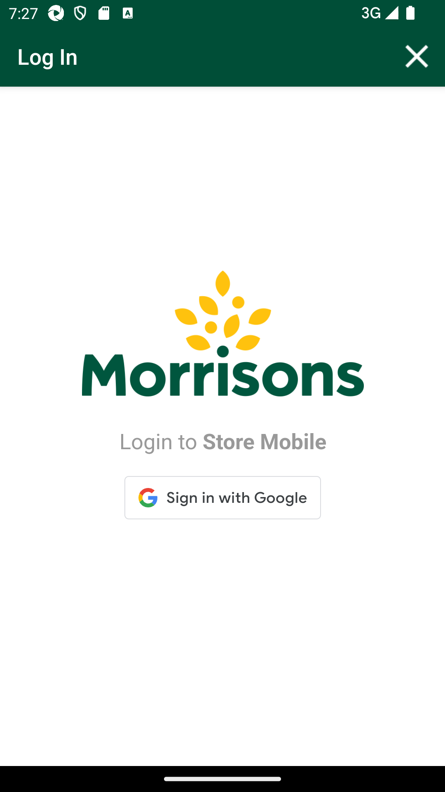
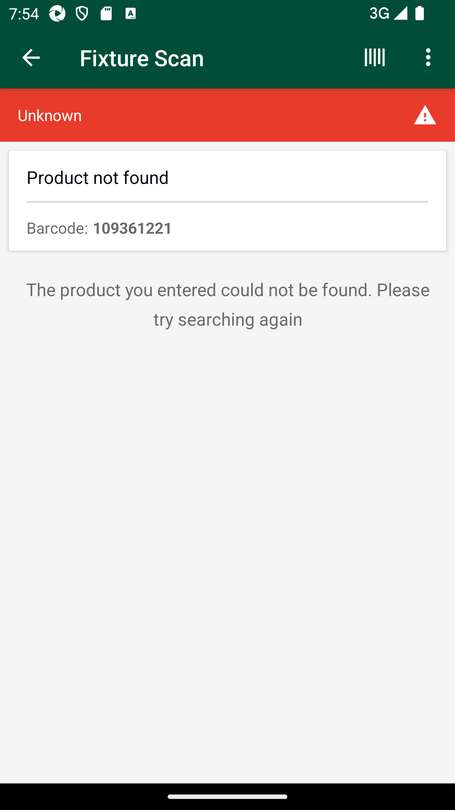

-
Scan GLH Mins with different count type and UOMs
6:34:45 PM / 02:46:40:621 Fail
Scan GLH Mins with different count type and UOMs
10.09.2024 6:34:45 PM 10.09.2024 9:21:26 PM 02:46:40:621 · #test-id=1@61NewGlhPart1New_701PassCreate SOH for itemsPassCreate SOH for itemsGiven I create SOH for the Items based on Response code "" " " " " " " PassTO CHANGE THE DEVICE TIMINGS AS REQUIREDPassTO CHANGE THE DEVICE TIMINGS AS REQUIREDGiven I send the time "07" and mins "00" and meridiem "am" and current date in listThen I Change timeThen I Change datePassTO CHANGE THE DEVICE TIMINGS AS REQUIREDGiven I send the time "07" and mins "00" and meridiem "am" and current date in listThen I Change timeThen I Change datePassDelete GLH Storewalk from ServicePassDelete GLH Storewalk from ServiceGiven request is made to capture access token and post endpoint for user v2 for "" Then I Verify the Response Code for the following "- " is 200
And I get the field value for the field "access_token"And Get the generated Access Tocken for SMA app Login ServiceGiven Get request is made to Get storewalks service for current dateAnd Get Operation perform on service requestThen Verify Get storewalks service response for current dateThen Delete request is made to Delete GLH storewalk for store id "8"FailVerify and Scan Count_type 'Single' and 'Cases' having UOM 'EA' of MIN for all department which include 'Positive' SOH in AM GLHPassVerify and Scan Count_type 'Single' and 'Cases' having UOM 'EA' of MIN for all department which include 'Positive' SOH in AM GLHWhen I enter Username and Password for SMA Collegue userAnd I click on login button for SMAThen I click on 'stockMngmtText' on page 'HomePagePO_New'Then I click on "Shop Floor - Gap Scan"And Get the generated Access Tocken for SMA app Login ServiceThen I click on Fixture ScanAnd I click on barcode entry ButtonThen Enter "104065909" numberAnd I click on COUNT buttonAnd I enter quantity "7" for fixture and warehouseAnd I choose the plan from popup if multiple records presentAnd I click on Back ButtonGiven Get request is made to Get storewalks service for current dateAnd Get Operation perform on service requestThen I verify Product id "104065909" for Store id "8" and Walk type "GapsHighsLows" is present in Get storewalk serviceThen I verify Capture details in storewalk for Product id "104065909" is Capture type "Count" Capture status "Incomplete" and Capture quantity "7"Then I verify Section status is "Available" in Get storewalk serviceGiven Get request is made to Get storewalks service for current dateAnd Get Operation perform on service requestThen Get Walkids from Getstorewalk service Store id "8"And Get the walk id for "GapsHighsLows"Given Get request is made to Get walkItem service for store id "8" and product id "104065909"And Get Operation perform on service requestThen Verify Get walkitem service responseAnd I Verify Get walkitem UOM "EA",Count Type "104065909", SOH and Action Type "Include"And I verify Get walkitem pack is present or notPassVerify and Scan Count_type 'Single' and 'Cases' having UOM 'EA' of MIN for all department which include 'Positive' SOH in AM GLHWhen I enter Username and Password for SMA Collegue userAnd I click on login button for SMAThen I click on 'stockMngmtText' on page 'HomePagePO_New'Then I click on "Shop Floor - Gap Scan"And Get the generated Access Tocken for SMA app Login ServiceThen I click on Fixture ScanAnd I click on barcode entry ButtonThen Enter "111358136" numberAnd I click on COUNT buttonAnd I enter quantity "6" for fixture and warehouseAnd I choose the plan from popup if multiple records presentAnd I click on Back ButtonGiven Get request is made to Get storewalks service for current dateAnd Get Operation perform on service requestThen I verify Product id "111358136" for Store id "8" and Walk type "GapsHighsLows" is present in Get storewalk serviceThen I verify Capture details in storewalk for Product id "111358136" is Capture type "Count" Capture status "Incomplete" and Capture quantity "6"Then I verify Section status is "Available" in Get storewalk serviceGiven Get request is made to Get storewalks service for current dateAnd Get Operation perform on service requestThen Get Walkids from Getstorewalk service Store id "8"And Get the walk id for "GapsHighsLows"Given Get request is made to Get walkItem service for store id "8" and product id "111358136"And Get Operation perform on service requestThen Verify Get walkitem service responseAnd I Verify Get walkitem UOM "EA",Count Type "111358136", SOH and Action Type "Include"And I verify Get walkitem pack is present or notPassVerify and Scan Count_type 'Single' and 'Cases' having UOM 'EA' of MIN for all department which include 'Positive' SOH in AM GLHWhen I enter Username and Password for SMA Collegue userAnd I click on login button for SMAThen I click on 'stockMngmtText' on page 'HomePagePO_New'Then I click on "Shop Floor - Gap Scan"And Get the generated Access Tocken for SMA app Login ServiceThen I click on Fixture ScanAnd I click on barcode entry ButtonThen Enter "107126295" numberAnd I click on COUNT buttonAnd I enter quantity "6" for fixture and warehouseAnd I choose the plan from popup if multiple records presentAnd I click on Back ButtonGiven Get request is made to Get storewalks service for current dateAnd Get Operation perform on service requestThen I verify Product id "107126295" for Store id "8" and Walk type "GapsHighsLows" is present in Get storewalk serviceThen I verify Capture details in storewalk for Product id "107126295" is Capture type "Count" Capture status "Incomplete" and Capture quantity "6"Then I verify Section status is "Available" in Get storewalk serviceGiven Get request is made to Get storewalks service for current dateAnd Get Operation perform on service requestThen Get Walkids from Getstorewalk service Store id "8"And Get the walk id for "GapsHighsLows"Given Get request is made to Get walkItem service for store id "8" and product id "107126295"And Get Operation perform on service requestThen Verify Get walkitem service responseAnd I Verify Get walkitem UOM "EA",Count Type "107126295", SOH and Action Type "Include"And I verify Get walkitem pack is present or notPassVerify and Scan Count_type 'Single' and 'Cases' having UOM 'EA' of MIN for all department which include 'Positive' SOH in AM GLHWhen I enter Username and Password for SMA Collegue userAnd I click on login button for SMAThen I click on 'stockMngmtText' on page 'HomePagePO_New'Then I click on "Shop Floor - Gap Scan"And Get the generated Access Tocken for SMA app Login ServiceThen I click on Fixture ScanAnd I click on barcode entry ButtonThen Enter "108629804" numberAnd I click on COUNT buttonAnd I enter quantity "9" for fixture and warehouseAnd I choose the plan from popup if multiple records presentAnd I click on Back ButtonGiven Get request is made to Get storewalks service for current dateAnd Get Operation perform on service requestThen I verify Product id "108629804" for Store id "8" and Walk type "GapsHighsLows" is present in Get storewalk serviceThen I verify Capture details in storewalk for Product id "108629804" is Capture type "Count" Capture status "Incomplete" and Capture quantity "9"Then I verify Section status is "Available" in Get storewalk serviceGiven Get request is made to Get storewalks service for current dateAnd Get Operation perform on service requestThen Get Walkids from Getstorewalk service Store id "8"And Get the walk id for "GapsHighsLows"Given Get request is made to Get walkItem service for store id "8" and product id "108629804"And Get Operation perform on service requestThen Verify Get walkitem service responseAnd I Verify Get walkitem UOM "EA",Count Type "108629804", SOH and Action Type "Include"And I verify Get walkitem pack is present or notPassVerify and Scan Count_type 'Single' and 'Cases' having UOM 'EA' of MIN for all department which include 'Positive' SOH in AM GLHWhen I enter Username and Password for SMA Collegue userAnd I click on login button for SMAThen I click on 'stockMngmtText' on page 'HomePagePO_New'Then I click on "Shop Floor - Gap Scan"And Get the generated Access Tocken for SMA app Login ServiceThen I click on Fixture ScanAnd I click on barcode entry ButtonThen Enter "110995598" numberAnd I click on COUNT buttonAnd I enter quantity "7" for fixture and warehouseAnd I choose the plan from popup if multiple records presentAnd I click on Back ButtonGiven Get request is made to Get storewalks service for current dateAnd Get Operation perform on service requestThen I verify Product id "110995598" for Store id "8" and Walk type "GapsHighsLows" is present in Get storewalk serviceThen I verify Capture details in storewalk for Product id "110995598" is Capture type "Count" Capture status "Incomplete" and Capture quantity "7"Then I verify Section status is "Available" in Get storewalk serviceGiven Get request is made to Get storewalks service for current dateAnd Get Operation perform on service requestThen Get Walkids from Getstorewalk service Store id "8"And Get the walk id for "GapsHighsLows"Given Get request is made to Get walkItem service for store id "8" and product id "110995598"And Get Operation perform on service requestThen Verify Get walkitem service responseAnd I Verify Get walkitem UOM "EA",Count Type "110995598", SOH and Action Type "Include"And I verify Get walkitem pack is present or notPassVerify and Scan Count_type 'Single' and 'Cases' having UOM 'EA' of MIN for all department which include 'Positive' SOH in AM GLHWhen I enter Username and Password for SMA Collegue userAnd I click on login button for SMAThen I click on 'stockMngmtText' on page 'HomePagePO_New'Then I click on "Shop Floor - Gap Scan"And Get the generated Access Tocken for SMA app Login ServiceThen I click on Fixture ScanAnd I click on barcode entry ButtonThen Enter "102370168" numberAnd I click on COUNT buttonAnd I enter quantity "7" for fixture and warehouseAnd I choose the plan from popup if multiple records presentAnd I click on Back ButtonGiven Get request is made to Get storewalks service for current dateAnd Get Operation perform on service requestThen I verify Product id "102370168" for Store id "8" and Walk type "GapsHighsLows" is present in Get storewalk serviceThen I verify Capture details in storewalk for Product id "102370168" is Capture type "Count" Capture status "Incomplete" and Capture quantity "7"Then I verify Section status is "Available" in Get storewalk serviceGiven Get request is made to Get storewalks service for current dateAnd Get Operation perform on service requestThen Get Walkids from Getstorewalk service Store id "8"And Get the walk id for "GapsHighsLows"Given Get request is made to Get walkItem service for store id "8" and product id "102370168"And Get Operation perform on service requestThen Verify Get walkitem service responseAnd I Verify Get walkitem UOM "EA",Count Type "102370168", SOH and Action Type "Include"And I verify Get walkitem pack is present or notFailVerify and Scan Count_type 'Single' and 'Cases' having UOM 'EA' of MIN for all department which include 'Positive' SOH in AM GLHWhen I enter Username and Password for SMA Collegue userAnd I click on login button for SMAcom.morrisons.common.action.Hook.afterScenario(io.cucumber.java.Scenario)
Then I click on 'stockMngmtText' on page 'HomePagePO_New'Step skippedThen I click on "Shop Floor - Gap Scan"Step skippedAnd Get the generated Access Tocken for SMA app Login ServiceStep skippedThen I click on Fixture ScanStep skippedAnd I click on barcode entry ButtonStep skippedThen Enter "105541065" numberStep skippedAnd I click on COUNT buttonStep skippedAnd I enter quantity "7" for fixture and warehouseStep skippedAnd I choose the plan from popup if multiple records presentStep skippedAnd I click on Back ButtonStep skippedGiven Get request is made to Get storewalks service for current dateStep skippedAnd Get Operation perform on service requestStep skippedThen I verify Product id "105541065" for Store id "8" and Walk type "GapsHighsLows" is present in Get storewalk serviceStep skippedThen I verify Capture details in storewalk for Product id "105541065" is Capture type "Count" Capture status "Incomplete" and Capture quantity "7"Step skippedThen I verify Section status is "Available" in Get storewalk serviceStep skippedGiven Get request is made to Get storewalks service for current dateStep skippedAnd Get Operation perform on service requestStep skippedThen Get Walkids from Getstorewalk service Store id "8"Step skippedAnd Get the walk id for "GapsHighsLows"Step skippedGiven Get request is made to Get walkItem service for store id "8" and product id "105541065"Step skippedAnd Get Operation perform on service requestStep skippedThen Verify Get walkitem service responseStep skippedAnd I Verify Get walkitem UOM "EA",Count Type "105541065", SOH and Action Type "Include"Step skippedAnd I verify Get walkitem pack is present or notStep skippedPassVerify and Scan Count_type 'Single' and 'Cases' having UOM 'EA' of MIN for all department which include 'Positive' SOH in AM GLHWhen I enter Username and Password for SMA Collegue userAnd I click on login button for SMAThen I click on 'stockMngmtText' on page 'HomePagePO_New'Then I click on "Shop Floor - Gap Scan"And Get the generated Access Tocken for SMA app Login ServiceThen I click on Fixture ScanAnd I click on barcode entry ButtonThen Enter "100001497" numberAnd I click on COUNT buttonAnd I enter quantity "4" for fixture and warehouseAnd I choose the plan from popup if multiple records presentAnd I click on Back ButtonGiven Get request is made to Get storewalks service for current dateAnd Get Operation perform on service requestThen I verify Product id "100001497" for Store id "8" and Walk type "GapsHighsLows" is present in Get storewalk serviceThen I verify Capture details in storewalk for Product id "100001497" is Capture type "Count" Capture status "Incomplete" and Capture quantity "4"Then I verify Section status is "Available" in Get storewalk serviceGiven Get request is made to Get storewalks service for current dateAnd Get Operation perform on service requestThen Get Walkids from Getstorewalk service Store id "8"And Get the walk id for "GapsHighsLows"Given Get request is made to Get walkItem service for store id "8" and product id "100001497"And Get Operation perform on service requestThen Verify Get walkitem service responseAnd I Verify Get walkitem UOM "EA",Count Type "100001497", SOH and Action Type "Include"And I verify Get walkitem pack is present or notPassVerify and Scan Count_type 'Single' and 'Cases' having UOM 'EA' of MIN for all department which include 'Positive' SOH in AM GLHWhen I enter Username and Password for SMA Collegue userAnd I click on login button for SMAThen I click on 'stockMngmtText' on page 'HomePagePO_New'Then I click on "Shop Floor - Gap Scan"And Get the generated Access Tocken for SMA app Login ServiceThen I click on Fixture ScanAnd I click on barcode entry ButtonThen Enter "104003441" numberAnd I click on COUNT buttonAnd I enter quantity "7" for fixture and warehouseAnd I choose the plan from popup if multiple records presentAnd I click on Back ButtonGiven Get request is made to Get storewalks service for current dateAnd Get Operation perform on service requestThen I verify Product id "104003441" for Store id "8" and Walk type "GapsHighsLows" is present in Get storewalk serviceThen I verify Capture details in storewalk for Product id "104003441" is Capture type "Count" Capture status "Incomplete" and Capture quantity "7"Then I verify Section status is "Available" in Get storewalk serviceGiven Get request is made to Get storewalks service for current dateAnd Get Operation perform on service requestThen Get Walkids from Getstorewalk service Store id "8"And Get the walk id for "GapsHighsLows"Given Get request is made to Get walkItem service for store id "8" and product id "104003441"And Get Operation perform on service requestThen Verify Get walkitem service responseAnd I Verify Get walkitem UOM "EA",Count Type "104003441", SOH and Action Type "Include"And I verify Get walkitem pack is present or notPassVerify and Scan Count_type 'Single' and 'Cases' having UOM 'EA' of MIN for all department which include 'Positive' SOH in AM GLHWhen I enter Username and Password for SMA Collegue userAnd I click on login button for SMAThen I click on 'stockMngmtText' on page 'HomePagePO_New'Then I click on "Shop Floor - Gap Scan"And Get the generated Access Tocken for SMA app Login ServiceThen I click on Fixture ScanAnd I click on barcode entry ButtonThen Enter "104065909" numberAnd I click on COUNT buttonAnd I enter quantity "7" for fixture and warehouseAnd I choose the plan from popup if multiple records presentAnd I click on Back ButtonGiven Get request is made to Get storewalks service for current dateAnd Get Operation perform on service requestThen I verify Product id "104065909" for Store id "8" and Walk type "GapsHighsLows" is present in Get storewalk serviceThen I verify Capture details in storewalk for Product id "104065909" is Capture type "Count" Capture status "Incomplete" and Capture quantity "7"Then I verify Section status is "Available" in Get storewalk serviceGiven Get request is made to Get storewalks service for current dateAnd Get Operation perform on service requestThen Get Walkids from Getstorewalk service Store id "8"And Get the walk id for "GapsHighsLows"Given Get request is made to Get walkItem service for store id "8" and product id "104065909"And Get Operation perform on service requestThen Verify Get walkitem service responseAnd I Verify Get walkitem UOM "EA",Count Type "104065909", SOH and Action Type "Include"And I verify Get walkitem pack is present or notPassVerify and Scan Count_type 'Single' and 'Cases' having UOM 'EA' of MIN for all department which include 'Positive' SOH in AM GLHWhen I enter Username and Password for SMA Collegue userAnd I click on login button for SMAThen I click on 'stockMngmtText' on page 'HomePagePO_New'Then I click on "Shop Floor - Gap Scan"And Get the generated Access Tocken for SMA app Login ServiceThen I click on Fixture ScanAnd I click on barcode entry ButtonThen Enter "110747754" numberAnd I click on COUNT buttonAnd I enter quantity "1" for fixture and warehouseAnd I choose the plan from popup if multiple records presentAnd I click on Back ButtonGiven Get request is made to Get storewalks service for current dateAnd Get Operation perform on service requestThen I verify Product id "110747754" for Store id "8" and Walk type "GapsHighsLows" is present in Get storewalk serviceThen I verify Capture details in storewalk for Product id "110747754" is Capture type "Count" Capture status "Incomplete" and Capture quantity "1"Then I verify Section status is "Available" in Get storewalk serviceGiven Get request is made to Get storewalks service for current dateAnd Get Operation perform on service requestThen Get Walkids from Getstorewalk service Store id "8"And Get the walk id for "GapsHighsLows"Given Get request is made to Get walkItem service for store id "8" and product id "110747754"And Get Operation perform on service requestThen Verify Get walkitem service responseAnd I Verify Get walkitem UOM "EA",Count Type "110747754", SOH and Action Type "Include"And I verify Get walkitem pack is present or notPassVerify and Scan Count_type 'Single' and 'Cases' having UOM 'EA' of MIN for all department which include 'Positive' SOH in AM GLHWhen I enter Username and Password for SMA Collegue userAnd I click on login button for SMAThen I click on 'stockMngmtText' on page 'HomePagePO_New'Then I click on "Shop Floor - Gap Scan"And Get the generated Access Tocken for SMA app Login ServiceThen I click on Fixture ScanAnd I click on barcode entry ButtonThen Enter "108810996" numberAnd I click on COUNT buttonAnd I enter quantity "6" for fixture and warehouseAnd I choose the plan from popup if multiple records presentAnd I click on Back ButtonGiven Get request is made to Get storewalks service for current dateAnd Get Operation perform on service requestThen I verify Product id "108810996" for Store id "8" and Walk type "GapsHighsLows" is present in Get storewalk serviceThen I verify Capture details in storewalk for Product id "108810996" is Capture type "Count" Capture status "Incomplete" and Capture quantity "6"Then I verify Section status is "Available" in Get storewalk serviceGiven Get request is made to Get storewalks service for current dateAnd Get Operation perform on service requestThen Get Walkids from Getstorewalk service Store id "8"And Get the walk id for "GapsHighsLows"Given Get request is made to Get walkItem service for store id "8" and product id "108810996"And Get Operation perform on service requestThen Verify Get walkitem service responseAnd I Verify Get walkitem UOM "EA",Count Type "108810996", SOH and Action Type "Include"And I verify Get walkitem pack is present or notFailVerify and Scan Count_type 'Single' and 'Cases' having UOM 'EA' of MIN for all department which include 'Positive' SOH in AM GLHWhen I enter Username and Password for SMA Collegue userAnd I click on login button for SMAThen I click on 'stockMngmtText' on page 'HomePagePO_New'Then I click on "Shop Floor - Gap Scan"And Get the generated Access Tocken for SMA app Login ServiceThen I click on Fixture ScanAnd I click on barcode entry ButtonThen Enter "109361221" numberAnd I click on COUNT buttoncom.morrisons.common.action.Hook.afterScenario(io.cucumber.java.Scenario)
And I enter quantity "7" for fixture and warehouseStep skippedAnd I choose the plan from popup if multiple records presentStep skippedAnd I click on Back ButtonStep skippedGiven Get request is made to Get storewalks service for current dateStep skippedAnd Get Operation perform on service requestStep skippedThen I verify Product id "109361221" for Store id "8" and Walk type "GapsHighsLows" is present in Get storewalk serviceStep skippedThen I verify Capture details in storewalk for Product id "109361221" is Capture type "Count" Capture status "Incomplete" and Capture quantity "7"Step skippedThen I verify Section status is "Available" in Get storewalk serviceStep skippedGiven Get request is made to Get storewalks service for current dateStep skippedAnd Get Operation perform on service requestStep skippedThen Get Walkids from Getstorewalk service Store id "8"Step skippedAnd Get the walk id for "GapsHighsLows"Step skippedGiven Get request is made to Get walkItem service for store id "8" and product id "109361221"Step skippedAnd Get Operation perform on service requestStep skippedThen Verify Get walkitem service responseStep skippedAnd I Verify Get walkitem UOM "EA",Count Type "109361221", SOH and Action Type "Include"Step skippedAnd I verify Get walkitem pack is present or notStep skippedFailVerify and Scan Count_type 'Single' and 'Cases' having UOM 'KG' of MIN for all department which include 'Positive' SOH in AM GLHPassVerify and Scan Count_type 'Single' and 'Cases' having UOM 'KG' of MIN for all department which include 'Positive' SOH in AM GLHWhen I enter Username and Password for SMA Collegue userAnd I click on login button for SMAThen I click on 'stockMngmtText' on page 'HomePagePO_New'Then I click on "Shop Floor - Gap Scan"And Get the generated Access Tocken for SMA app Login ServiceThen I click on Fixture ScanAnd I click on barcode entry ButtonThen Enter "108394582" numberAnd I click on COUNT buttonAnd I enter quantity "3" for fixture and warehouseAnd I choose the plan from popup if multiple records presentAnd I click on Back ButtonGiven Get request is made to Get storewalks service for current dateAnd Get Operation perform on service requestThen I verify Product id "108394582" for Store id "8" and Walk type "GapsHighsLows" is present in Get storewalk serviceThen I verify Capture details in storewalk for Product id "108394582" is Capture type "Count" Capture status "Incomplete" and Capture quantity "3"Then I verify Section status is "Available" in Get storewalk serviceGiven Get request is made to Get storewalks service for current dateAnd Get Operation perform on service requestThen Get Walkids from Getstorewalk service Store id "8"And Get the walk id for "GapsHighsLows"Given Get request is made to Get walkItem service for store id "8" and product id "108394582"And Get Operation perform on service requestThen Verify Get walkitem service responseAnd I Verify Get walkitem UOM "KG",Count Type "108394582", SOH and Action Type "Include"And I verify Get walkitem pack is present or notGiven ProductId "108394582" and StoreID "8" is included in the Stock ServiceWhen Request is made into Stock serviceThen Service should return the details of the Stock serviceFailVerify and Scan Count_type 'Single' and 'Cases' having UOM 'KG' of MIN for all department which include 'Positive' SOH in AM GLHWhen I enter Username and Password for SMA Collegue userAnd I click on login button for SMAThen I click on 'stockMngmtText' on page 'HomePagePO_New'Then I click on "Shop Floor - Gap Scan"And Get the generated Access Tocken for SMA app Login ServiceThen I click on Fixture ScanAnd I click on barcode entry ButtonThen Enter "108524922" numberAnd I click on COUNT buttoncom.morrisons.common.action.Hook.afterScenario(io.cucumber.java.Scenario)And I enter quantity "9" for fixture and warehouseStep skippedAnd I choose the plan from popup if multiple records presentStep skippedAnd I click on Back ButtonStep skippedGiven Get request is made to Get storewalks service for current dateStep skippedAnd Get Operation perform on service requestStep skippedThen I verify Product id "108524922" for Store id "8" and Walk type "GapsHighsLows" is present in Get storewalk serviceStep skippedThen I verify Capture details in storewalk for Product id "108524922" is Capture type "Count" Capture status "Incomplete" and Capture quantity "9"Step skippedThen I verify Section status is "Available" in Get storewalk serviceStep skippedGiven Get request is made to Get storewalks service for current dateStep skippedAnd Get Operation perform on service requestStep skippedThen Get Walkids from Getstorewalk service Store id "8"Step skippedAnd Get the walk id for "GapsHighsLows"Step skippedGiven Get request is made to Get walkItem service for store id "8" and product id "108524922"Step skippedAnd Get Operation perform on service requestStep skippedThen Verify Get walkitem service responseStep skippedAnd I Verify Get walkitem UOM "KG",Count Type "108524922", SOH and Action Type "Include"Step skippedAnd I verify Get walkitem pack is present or notStep skippedGiven ProductId "108524922" and StoreID "8" is included in the Stock ServiceStep skippedWhen Request is made into Stock serviceStep skippedThen Service should return the details of the Stock serviceStep skippedFailVerify and Scan Count_type 'Single' and 'Cases' having UOM 'KG' of MIN for all department which include 'Positive' SOH in AM GLHWhen I enter Username and Password for SMA Collegue userAnd I click on login button for SMAThen I click on 'stockMngmtText' on page 'HomePagePO_New'Then I click on "Shop Floor - Gap Scan"And Get the generated Access Tocken for SMA app Login ServiceThen I click on Fixture ScanAnd I click on barcode entry ButtonThen Enter "108543859" numberAnd I click on COUNT buttoncom.morrisons.common.action.Hook.afterScenario(io.cucumber.java.Scenario)And I enter quantity "9" for fixture and warehouseStep skippedAnd I choose the plan from popup if multiple records presentStep skippedAnd I click on Back ButtonStep skippedGiven Get request is made to Get storewalks service for current dateStep skippedAnd Get Operation perform on service requestStep skippedThen I verify Product id "108543859" for Store id "8" and Walk type "GapsHighsLows" is present in Get storewalk serviceStep skippedThen I verify Capture details in storewalk for Product id "108543859" is Capture type "Count" Capture status "Incomplete" and Capture quantity "9"Step skippedThen I verify Section status is "Available" in Get storewalk serviceStep skippedGiven Get request is made to Get storewalks service for current dateStep skippedAnd Get Operation perform on service requestStep skippedThen Get Walkids from Getstorewalk service Store id "8"Step skippedAnd Get the walk id for "GapsHighsLows"Step skippedGiven Get request is made to Get walkItem service for store id "8" and product id "108543859"Step skippedAnd Get Operation perform on service requestStep skippedThen Verify Get walkitem service responseStep skippedAnd I Verify Get walkitem UOM "KG",Count Type "108543859", SOH and Action Type "Include"Step skippedAnd I verify Get walkitem pack is present or notStep skippedGiven ProductId "108543859" and StoreID "8" is included in the Stock ServiceStep skippedWhen Request is made into Stock serviceStep skippedThen Service should return the details of the Stock serviceStep skippedPassVerify and Scan Count_type 'Single' and 'Cases' having UOM 'KG' of MIN for all department which include 'Positive' SOH in AM GLHWhen I enter Username and Password for SMA Collegue userAnd I click on login button for SMAThen I click on 'stockMngmtText' on page 'HomePagePO_New'Then I click on "Shop Floor - Gap Scan"And Get the generated Access Tocken for SMA app Login ServiceThen I click on Fixture ScanAnd I click on barcode entry ButtonThen Enter "108368632" numberAnd I click on COUNT buttonAnd I enter quantity "9" for fixture and warehouseAnd I choose the plan from popup if multiple records presentAnd I click on Back ButtonGiven Get request is made to Get storewalks service for current dateAnd Get Operation perform on service requestThen I verify Product id "108368632" for Store id "8" and Walk type "GapsHighsLows" is present in Get storewalk serviceThen I verify Capture details in storewalk for Product id "108368632" is Capture type "Count" Capture status "Incomplete" and Capture quantity "9"Then I verify Section status is "Available" in Get storewalk serviceGiven Get request is made to Get storewalks service for current dateAnd Get Operation perform on service requestThen Get Walkids from Getstorewalk service Store id "8"And Get the walk id for "GapsHighsLows"Given Get request is made to Get walkItem service for store id "8" and product id "108368632"And Get Operation perform on service requestThen Verify Get walkitem service responseAnd I Verify Get walkitem UOM "KG",Count Type "108368632", SOH and Action Type "Include"And I verify Get walkitem pack is present or notGiven ProductId "108368632" and StoreID "8" is included in the Stock ServiceWhen Request is made into Stock serviceThen Service should return the details of the Stock servicePassVerify and Scan Count_type 'Single' and 'Cases' having UOM 'KG' of MIN for all department which include 'Positive' SOH in AM GLHWhen I enter Username and Password for SMA Collegue userAnd I click on login button for SMAThen I click on 'stockMngmtText' on page 'HomePagePO_New'Then I click on "Shop Floor - Gap Scan"And Get the generated Access Tocken for SMA app Login ServiceThen I click on Fixture ScanAnd I click on barcode entry ButtonThen Enter "108335700" numberAnd I click on COUNT buttonAnd I enter quantity "9" for fixture and warehouseAnd I choose the plan from popup if multiple records presentAnd I click on Back ButtonGiven Get request is made to Get storewalks service for current dateAnd Get Operation perform on service requestThen I verify Product id "108335700" for Store id "8" and Walk type "GapsHighsLows" is present in Get storewalk serviceThen I verify Capture details in storewalk for Product id "108335700" is Capture type "Count" Capture status "Incomplete" and Capture quantity "9"Then I verify Section status is "Available" in Get storewalk serviceGiven Get request is made to Get storewalks service for current dateAnd Get Operation perform on service requestThen Get Walkids from Getstorewalk service Store id "8"And Get the walk id for "GapsHighsLows"Given Get request is made to Get walkItem service for store id "8" and product id "108335700"And Get Operation perform on service requestThen Verify Get walkitem service responseAnd I Verify Get walkitem UOM "KG",Count Type "108335700", SOH and Action Type "Include"And I verify Get walkitem pack is present or notGiven ProductId "108335700" and StoreID "8" is included in the Stock ServiceWhen Request is made into Stock serviceThen Service should return the details of the Stock servicePassVerify and Scan Count_type 'Single' and 'Cases' having UOM 'KG' of MIN for all department which include 'Positive' SOH in AM GLHWhen I enter Username and Password for SMA Collegue userAnd I click on login button for SMAThen I click on 'stockMngmtText' on page 'HomePagePO_New'Then I click on "Shop Floor - Gap Scan"And Get the generated Access Tocken for SMA app Login ServiceThen I click on Fixture ScanAnd I click on barcode entry ButtonThen Enter "108335777" numberAnd I click on COUNT buttonAnd I enter quantity "9" for fixture and warehouseAnd I choose the plan from popup if multiple records presentAnd I click on Back ButtonGiven Get request is made to Get storewalks service for current dateAnd Get Operation perform on service requestThen I verify Product id "108335777" for Store id "8" and Walk type "GapsHighsLows" is present in Get storewalk serviceThen I verify Capture details in storewalk for Product id "108335777" is Capture type "Count" Capture status "Incomplete" and Capture quantity "9"Then I verify Section status is "Available" in Get storewalk serviceGiven Get request is made to Get storewalks service for current dateAnd Get Operation perform on service requestThen Get Walkids from Getstorewalk service Store id "8"And Get the walk id for "GapsHighsLows"Given Get request is made to Get walkItem service for store id "8" and product id "108335777"And Get Operation perform on service requestThen Verify Get walkitem service responseAnd I Verify Get walkitem UOM "KG",Count Type "108335777", SOH and Action Type "Include"And I verify Get walkitem pack is present or notGiven ProductId "108335777" and StoreID "8" is included in the Stock ServiceWhen Request is made into Stock serviceThen Service should return the details of the Stock serviceFailVerify and Scan Count_type 'Single' and 'Cases' having UOM 'KG' of MIN for all department which include 'Positive' SOH in AM GLHWhen I enter Username and Password for SMA Collegue userAnd I click on login button for SMAThen I click on 'stockMngmtText' on page 'HomePagePO_New'Then I click on "Shop Floor - Gap Scan"And Get the generated Access Tocken for SMA app Login ServiceThen I click on Fixture ScanAnd I click on barcode entry ButtonThen Enter "109202204" numberAnd I click on COUNT buttoncom.morrisons.common.action.Hook.afterScenario(io.cucumber.java.Scenario) And I enter quantity "9" for fixture and warehouseStep skippedAnd I choose the plan from popup if multiple records presentStep skippedAnd I click on Back ButtonStep skippedGiven Get request is made to Get storewalks service for current dateStep skippedAnd Get Operation perform on service requestStep skippedThen I verify Product id "109202204" for Store id "8" and Walk type "GapsHighsLows" is present in Get storewalk serviceStep skippedThen I verify Capture details in storewalk for Product id "109202204" is Capture type "Count" Capture status "Incomplete" and Capture quantity "9"Step skippedThen I verify Section status is "Available" in Get storewalk serviceStep skippedGiven Get request is made to Get storewalks service for current dateStep skippedAnd Get Operation perform on service requestStep skippedThen Get Walkids from Getstorewalk service Store id "8"Step skippedAnd Get the walk id for "GapsHighsLows"Step skippedGiven Get request is made to Get walkItem service for store id "8" and product id "109202204"Step skippedAnd Get Operation perform on service requestStep skippedThen Verify Get walkitem service responseStep skippedAnd I Verify Get walkitem UOM "KG",Count Type "109202204", SOH and Action Type "Include"Step skippedAnd I verify Get walkitem pack is present or notStep skippedGiven ProductId "109202204" and StoreID "8" is included in the Stock ServiceStep skippedWhen Request is made into Stock serviceStep skippedThen Service should return the details of the Stock serviceStep skippedFailVerify and Scan Count_type 'Single' and 'Cases' having UOM 'KG' of MIN for all department which include 'Positive' SOH in AM GLHWhen I enter Username and Password for SMA Collegue userAnd I click on login button for SMAThen I click on 'stockMngmtText' on page 'HomePagePO_New'Then I click on "Shop Floor - Gap Scan"And Get the generated Access Tocken for SMA app Login ServiceThen I click on Fixture ScanAnd I click on barcode entry ButtonThen Enter "104058522" numberAnd I click on COUNT buttoncom.morrisons.common.action.Hook.afterScenario(io.cucumber.java.Scenario)And I enter quantity "9" for fixture and warehouseStep skippedAnd I choose the plan from popup if multiple records presentStep skippedAnd I click on Back ButtonStep skippedGiven Get request is made to Get storewalks service for current dateStep skippedAnd Get Operation perform on service requestStep skippedThen I verify Product id "104058522" for Store id "8" and Walk type "GapsHighsLows" is present in Get storewalk serviceStep skippedThen I verify Capture details in storewalk for Product id "104058522" is Capture type "Count" Capture status "Incomplete" and Capture quantity "9"Step skippedThen I verify Section status is "Available" in Get storewalk serviceStep skippedGiven Get request is made to Get storewalks service for current dateStep skippedAnd Get Operation perform on service requestStep skippedThen Get Walkids from Getstorewalk service Store id "8"Step skippedAnd Get the walk id for "GapsHighsLows"Step skippedGiven Get request is made to Get walkItem service for store id "8" and product id "104058522"Step skippedAnd Get Operation perform on service requestStep skippedThen Verify Get walkitem service responseStep skippedAnd I Verify Get walkitem UOM "KG",Count Type "104058522", SOH and Action Type "Include"Step skippedAnd I verify Get walkitem pack is present or notStep skippedGiven ProductId "104058522" and StoreID "8" is included in the Stock ServiceStep skippedWhen Request is made into Stock serviceStep skippedThen Service should return the details of the Stock serviceStep skippedFailVerify and Scan Count_type 'Single' and 'Cases' having UOM 'PCS' of MIN for all department which include 'Positive' SOH in AM GLHPassVerify and Scan Count_type 'Single' and 'Cases' having UOM 'PCS' of MIN for all department which include 'Positive' SOH in AM GLHWhen I enter Username and Password for SMA Collegue userAnd I click on login button for SMAThen I click on 'stockMngmtText' on page 'HomePagePO_New'Then I click on "Shop Floor - Gap Scan"And Get the generated Access Tocken for SMA app Login ServiceThen I click on Fixture ScanAnd I click on barcode entry ButtonThen Enter "108779061" numberAnd I click on COUNT buttonAnd I enter quantity "3" for fixture and warehouseAnd I choose the plan from popup if multiple records presentAnd I click on Back ButtonGiven Get request is made to Get storewalks service for current dateAnd Get Operation perform on service requestThen I verify Product id "108779061" for Store id "8" and Walk type "GapsHighsLows" is present in Get storewalk serviceThen I verify Capture details in storewalk for Product id "108779061" is Capture type "Count" Capture status "Incomplete" and Capture quantity "3"Then I verify Section status is "Available" in Get storewalk serviceGiven Get request is made to Get storewalks service for current dateAnd Get Operation perform on service requestThen Get Walkids from Getstorewalk service Store id "8"And Get the walk id for "GapsHighsLows"Given Get request is made to Get walkItem service for store id "8" and product id "108779061"And Get Operation perform on service requestThen Verify Get walkitem service responseAnd I Verify Get walkitem UOM "PCS",Count Type "108779061", SOH and Action Type "Include"And I verify Get walkitem pack is present or notGiven ProductId "108779061" and StoreID "8" is included in the Stock ServiceWhen Request is made into Stock serviceThen Service should return the details of the Stock servicePassVerify and Scan Count_type 'Single' and 'Cases' having UOM 'PCS' of MIN for all department which include 'Positive' SOH in AM GLHWhen I enter Username and Password for SMA Collegue userAnd I click on login button for SMAThen I click on 'stockMngmtText' on page 'HomePagePO_New'Then I click on "Shop Floor - Gap Scan"And Get the generated Access Tocken for SMA app Login ServiceThen I click on Fixture ScanAnd I click on barcode entry ButtonThen Enter "107694381" numberAnd I click on COUNT buttonAnd I enter quantity "3" for fixture and warehouseAnd I choose the plan from popup if multiple records presentAnd I click on Back ButtonGiven Get request is made to Get storewalks service for current dateAnd Get Operation perform on service requestThen I verify Product id "107694381" for Store id "8" and Walk type "GapsHighsLows" is present in Get storewalk serviceThen I verify Capture details in storewalk for Product id "107694381" is Capture type "Count" Capture status "Incomplete" and Capture quantity "3"Then I verify Section status is "Available" in Get storewalk serviceGiven Get request is made to Get storewalks service for current dateAnd Get Operation perform on service requestThen Get Walkids from Getstorewalk service Store id "8"And Get the walk id for "GapsHighsLows"Given Get request is made to Get walkItem service for store id "8" and product id "107694381"And Get Operation perform on service requestThen Verify Get walkitem service responseAnd I Verify Get walkitem UOM "PCS",Count Type "107694381", SOH and Action Type "Include"And I verify Get walkitem pack is present or notGiven ProductId "107694381" and StoreID "8" is included in the Stock ServiceWhen Request is made into Stock serviceThen Service should return the details of the Stock serviceFailVerify and Scan Count_type 'Single' and 'Cases' having UOM 'PCS' of MIN for all department which include 'Positive' SOH in AM GLHWhen I enter Username and Password for SMA Collegue userAnd I click on login button for SMAThen I click on 'stockMngmtText' on page 'HomePagePO_New'Then I click on "Shop Floor - Gap Scan"And Get the generated Access Tocken for SMA app Login ServiceThen I click on Fixture ScanAnd I click on barcode entry ButtonThen Enter "103853612" numberAnd I click on COUNT buttonAnd I enter quantity "3" for fixture and warehouseAnd I choose the plan from popup if multiple records presentAnd I click on Back Buttoncom.morrisons.common.action.Hook.afterScenario(io.cucumber.java.Scenario)
And I enter quantity "9" for fixture and warehouseStep skippedAnd I choose the plan from popup if multiple records presentStep skippedAnd I click on Back ButtonStep skippedGiven Get request is made to Get storewalks service for current dateStep skippedAnd Get Operation perform on service requestStep skippedThen I verify Product id "109202204" for Store id "8" and Walk type "GapsHighsLows" is present in Get storewalk serviceStep skippedThen I verify Capture details in storewalk for Product id "109202204" is Capture type "Count" Capture status "Incomplete" and Capture quantity "9"Step skippedThen I verify Section status is "Available" in Get storewalk serviceStep skippedGiven Get request is made to Get storewalks service for current dateStep skippedAnd Get Operation perform on service requestStep skippedThen Get Walkids from Getstorewalk service Store id "8"Step skippedAnd Get the walk id for "GapsHighsLows"Step skippedGiven Get request is made to Get walkItem service for store id "8" and product id "109202204"Step skippedAnd Get Operation perform on service requestStep skippedThen Verify Get walkitem service responseStep skippedAnd I Verify Get walkitem UOM "KG",Count Type "109202204", SOH and Action Type "Include"Step skippedAnd I verify Get walkitem pack is present or notStep skippedGiven ProductId "109202204" and StoreID "8" is included in the Stock ServiceStep skippedWhen Request is made into Stock serviceStep skippedThen Service should return the details of the Stock serviceStep skippedFailVerify and Scan Count_type 'Single' and 'Cases' having UOM 'KG' of MIN for all department which include 'Positive' SOH in AM GLHWhen I enter Username and Password for SMA Collegue userAnd I click on login button for SMAThen I click on 'stockMngmtText' on page 'HomePagePO_New'Then I click on "Shop Floor - Gap Scan"And Get the generated Access Tocken for SMA app Login ServiceThen I click on Fixture ScanAnd I click on barcode entry ButtonThen Enter "104058522" numberAnd I click on COUNT buttoncom.morrisons.common.action.Hook.afterScenario(io.cucumber.java.Scenario)And I enter quantity "9" for fixture and warehouseStep skippedAnd I choose the plan from popup if multiple records presentStep skippedAnd I click on Back ButtonStep skippedGiven Get request is made to Get storewalks service for current dateStep skippedAnd Get Operation perform on service requestStep skippedThen I verify Product id "104058522" for Store id "8" and Walk type "GapsHighsLows" is present in Get storewalk serviceStep skippedThen I verify Capture details in storewalk for Product id "104058522" is Capture type "Count" Capture status "Incomplete" and Capture quantity "9"Step skippedThen I verify Section status is "Available" in Get storewalk serviceStep skippedGiven Get request is made to Get storewalks service for current dateStep skippedAnd Get Operation perform on service requestStep skippedThen Get Walkids from Getstorewalk service Store id "8"Step skippedAnd Get the walk id for "GapsHighsLows"Step skippedGiven Get request is made to Get walkItem service for store id "8" and product id "104058522"Step skippedAnd Get Operation perform on service requestStep skippedThen Verify Get walkitem service responseStep skippedAnd I Verify Get walkitem UOM "KG",Count Type "104058522", SOH and Action Type "Include"Step skippedAnd I verify Get walkitem pack is present or notStep skippedGiven ProductId "104058522" and StoreID "8" is included in the Stock ServiceStep skippedWhen Request is made into Stock serviceStep skippedThen Service should return the details of the Stock serviceStep skippedFailVerify and Scan Count_type 'Single' and 'Cases' having UOM 'PCS' of MIN for all department which include 'Positive' SOH in AM GLHPassVerify and Scan Count_type 'Single' and 'Cases' having UOM 'PCS' of MIN for all department which include 'Positive' SOH in AM GLHWhen I enter Username and Password for SMA Collegue userAnd I click on login button for SMAThen I click on 'stockMngmtText' on page 'HomePagePO_New'Then I click on "Shop Floor - Gap Scan"And Get the generated Access Tocken for SMA app Login ServiceThen I click on Fixture ScanAnd I click on barcode entry ButtonThen Enter "108779061" numberAnd I click on COUNT buttonAnd I enter quantity "3" for fixture and warehouseAnd I choose the plan from popup if multiple records presentAnd I click on Back ButtonGiven Get request is made to Get storewalks service for current dateAnd Get Operation perform on service requestThen I verify Product id "108779061" for Store id "8" and Walk type "GapsHighsLows" is present in Get storewalk serviceThen I verify Capture details in storewalk for Product id "108779061" is Capture type "Count" Capture status "Incomplete" and Capture quantity "3"Then I verify Section status is "Available" in Get storewalk serviceGiven Get request is made to Get storewalks service for current dateAnd Get Operation perform on service requestThen Get Walkids from Getstorewalk service Store id "8"And Get the walk id for "GapsHighsLows"Given Get request is made to Get walkItem service for store id "8" and product id "108779061"And Get Operation perform on service requestThen Verify Get walkitem service responseAnd I Verify Get walkitem UOM "PCS",Count Type "108779061", SOH and Action Type "Include"And I verify Get walkitem pack is present or notGiven ProductId "108779061" and StoreID "8" is included in the Stock ServiceWhen Request is made into Stock serviceThen Service should return the details of the Stock servicePassVerify and Scan Count_type 'Single' and 'Cases' having UOM 'PCS' of MIN for all department which include 'Positive' SOH in AM GLHWhen I enter Username and Password for SMA Collegue userAnd I click on login button for SMAThen I click on 'stockMngmtText' on page 'HomePagePO_New'Then I click on "Shop Floor - Gap Scan"And Get the generated Access Tocken for SMA app Login ServiceThen I click on Fixture ScanAnd I click on barcode entry ButtonThen Enter "107694381" numberAnd I click on COUNT buttonAnd I enter quantity "3" for fixture and warehouseAnd I choose the plan from popup if multiple records presentAnd I click on Back ButtonGiven Get request is made to Get storewalks service for current dateAnd Get Operation perform on service requestThen I verify Product id "107694381" for Store id "8" and Walk type "GapsHighsLows" is present in Get storewalk serviceThen I verify Capture details in storewalk for Product id "107694381" is Capture type "Count" Capture status "Incomplete" and Capture quantity "3"Then I verify Section status is "Available" in Get storewalk serviceGiven Get request is made to Get storewalks service for current dateAnd Get Operation perform on service requestThen Get Walkids from Getstorewalk service Store id "8"And Get the walk id for "GapsHighsLows"Given Get request is made to Get walkItem service for store id "8" and product id "107694381"And Get Operation perform on service requestThen Verify Get walkitem service responseAnd I Verify Get walkitem UOM "PCS",Count Type "107694381", SOH and Action Type "Include"And I verify Get walkitem pack is present or notGiven ProductId "107694381" and StoreID "8" is included in the Stock ServiceWhen Request is made into Stock serviceThen Service should return the details of the Stock serviceFailVerify and Scan Count_type 'Single' and 'Cases' having UOM 'PCS' of MIN for all department which include 'Positive' SOH in AM GLHWhen I enter Username and Password for SMA Collegue userAnd I click on login button for SMAThen I click on 'stockMngmtText' on page 'HomePagePO_New'Then I click on "Shop Floor - Gap Scan"And Get the generated Access Tocken for SMA app Login ServiceThen I click on Fixture ScanAnd I click on barcode entry ButtonThen Enter "103853612" numberAnd I click on COUNT buttonAnd I enter quantity "3" for fixture and warehouseAnd I choose the plan from popup if multiple records presentAnd I click on Back Buttoncom.morrisons.common.action.Hook.afterScenario(io.cucumber.java.Scenario) Given Get request is made to Get storewalks service for current dateStep skippedAnd Get Operation perform on service requestStep skippedThen I verify Product id "103853612" for Store id "8" and Walk type "GapsHighsLows" is present in Get storewalk serviceStep skippedThen I verify Capture details in storewalk for Product id "103853612" is Capture type "Count" Capture status "Incomplete" and Capture quantity "3"Step skippedThen I verify Section status is "Available" in Get storewalk serviceStep skippedGiven Get request is made to Get storewalks service for current dateStep skippedAnd Get Operation perform on service requestStep skippedThen Get Walkids from Getstorewalk service Store id "8"Step skippedAnd Get the walk id for "GapsHighsLows"Step skippedGiven Get request is made to Get walkItem service for store id "8" and product id "103853612"Step skippedAnd Get Operation perform on service requestStep skippedThen Verify Get walkitem service responseStep skippedAnd I Verify Get walkitem UOM "PCS",Count Type "103853612", SOH and Action Type "Include"Step skippedAnd I verify Get walkitem pack is present or notStep skippedGiven ProductId "103853612" and StoreID "8" is included in the Stock ServiceStep skippedWhen Request is made into Stock serviceStep skippedThen Service should return the details of the Stock serviceStep skippedPassVerify and Scan Count_type 'Single' and 'Cases' having UOM 'PCS' of MIN for all department which include 'Positive' SOH in AM GLHWhen I enter Username and Password for SMA Collegue userAnd I click on login button for SMAThen I click on 'stockMngmtText' on page 'HomePagePO_New'Then I click on "Shop Floor - Gap Scan"And Get the generated Access Tocken for SMA app Login ServiceThen I click on Fixture ScanAnd I click on barcode entry ButtonThen Enter "102370011" numberAnd I click on COUNT buttonAnd I enter quantity "3" for fixture and warehouseAnd I choose the plan from popup if multiple records presentAnd I click on Back ButtonGiven Get request is made to Get storewalks service for current dateAnd Get Operation perform on service requestThen I verify Product id "102370011" for Store id "8" and Walk type "GapsHighsLows" is present in Get storewalk serviceThen I verify Capture details in storewalk for Product id "102370011" is Capture type "Count" Capture status "Incomplete" and Capture quantity "3"Then I verify Section status is "Available" in Get storewalk serviceGiven Get request is made to Get storewalks service for current dateAnd Get Operation perform on service requestThen Get Walkids from Getstorewalk service Store id "8"And Get the walk id for "GapsHighsLows"Given Get request is made to Get walkItem service for store id "8" and product id "102370011"And Get Operation perform on service requestThen Verify Get walkitem service responseAnd I Verify Get walkitem UOM "PCS",Count Type "102370011", SOH and Action Type "Include"And I verify Get walkitem pack is present or notGiven ProductId "102370011" and StoreID "8" is included in the Stock ServiceWhen Request is made into Stock serviceThen Service should return the details of the Stock servicePassVerify and Scan Count_type 'Single' and 'Cases' having UOM 'PCS' of MIN for all department which include 'Positive' SOH in AM GLHWhen I enter Username and Password for SMA Collegue userAnd I click on login button for SMAThen I click on 'stockMngmtText' on page 'HomePagePO_New'Then I click on "Shop Floor - Gap Scan"And Get the generated Access Tocken for SMA app Login ServiceThen I click on Fixture ScanAnd I click on barcode entry ButtonThen Enter "102369685" numberAnd I click on COUNT buttonAnd I enter quantity "3" for fixture and warehouseAnd I choose the plan from popup if multiple records presentAnd I click on Back ButtonGiven Get request is made to Get storewalks service for current dateAnd Get Operation perform on service requestThen I verify Product id "102369685" for Store id "8" and Walk type "GapsHighsLows" is present in Get storewalk serviceThen I verify Capture details in storewalk for Product id "102369685" is Capture type "Count" Capture status "Incomplete" and Capture quantity "3"Then I verify Section status is "Available" in Get storewalk serviceGiven Get request is made to Get storewalks service for current dateAnd Get Operation perform on service requestThen Get Walkids from Getstorewalk service Store id "8"And Get the walk id for "GapsHighsLows"Given Get request is made to Get walkItem service for store id "8" and product id "102369685"And Get Operation perform on service requestThen Verify Get walkitem service responseAnd I Verify Get walkitem UOM "PCS",Count Type "102369685", SOH and Action Type "Include"And I verify Get walkitem pack is present or notGiven ProductId "102369685" and StoreID "8" is included in the Stock ServiceWhen Request is made into Stock serviceThen Service should return the details of the Stock servicePassVerify and Scan Count_type 'Single' and 'Cases' having UOM 'PCS' of MIN for all department which include 'Positive' SOH in AM GLHWhen I enter Username and Password for SMA Collegue userAnd I click on login button for SMAThen I click on 'stockMngmtText' on page 'HomePagePO_New'Then I click on "Shop Floor - Gap Scan"And Get the generated Access Tocken for SMA app Login ServiceThen I click on Fixture ScanAnd I click on barcode entry ButtonThen Enter "102369685" numberAnd I click on COUNT buttonAnd I enter quantity "3" for fixture and warehouseAnd I choose the plan from popup if multiple records presentAnd I click on Back ButtonGiven Get request is made to Get storewalks service for current dateAnd Get Operation perform on service requestThen I verify Product id "102369685" for Store id "8" and Walk type "GapsHighsLows" is present in Get storewalk serviceThen I verify Capture details in storewalk for Product id "102369685" is Capture type "Count" Capture status "Incomplete" and Capture quantity "3"Then I verify Section status is "Available" in Get storewalk serviceGiven Get request is made to Get storewalks service for current dateAnd Get Operation perform on service requestThen Get Walkids from Getstorewalk service Store id "8"And Get the walk id for "GapsHighsLows"Given Get request is made to Get walkItem service for store id "8" and product id "102369685"And Get Operation perform on service requestThen Verify Get walkitem service responseAnd I Verify Get walkitem UOM "PCS",Count Type "102369685", SOH and Action Type "Include"And I verify Get walkitem pack is present or notGiven ProductId "102369685" and StoreID "8" is included in the Stock ServiceWhen Request is made into Stock serviceThen Service should return the details of the Stock servicePassVerify and Scan Count_type 'Single' and 'Cases' having UOM 'PCS' of MIN for all department which include 'Positive' SOH in AM GLHWhen I enter Username and Password for SMA Collegue userAnd I click on login button for SMAThen I click on 'stockMngmtText' on page 'HomePagePO_New'Then I click on "Shop Floor - Gap Scan"And Get the generated Access Tocken for SMA app Login ServiceThen I click on Fixture ScanAnd I click on barcode entry ButtonThen Enter "105198164" numberAnd I click on COUNT buttonAnd I enter quantity "3" for fixture and warehouseAnd I choose the plan from popup if multiple records presentAnd I click on Back ButtonGiven Get request is made to Get storewalks service for current dateAnd Get Operation perform on service requestThen I verify Product id "105198164" for Store id "8" and Walk type "GapsHighsLows" is present in Get storewalk serviceThen I verify Capture details in storewalk for Product id "105198164" is Capture type "Count" Capture status "Incomplete" and Capture quantity "3"Then I verify Section status is "Available" in Get storewalk serviceGiven Get request is made to Get storewalks service for current dateAnd Get Operation perform on service requestThen Get Walkids from Getstorewalk service Store id "8"And Get the walk id for "GapsHighsLows"Given Get request is made to Get walkItem service for store id "8" and product id "105198164"And Get Operation perform on service requestThen Verify Get walkitem service responseAnd I Verify Get walkitem UOM "PCS",Count Type "105198164", SOH and Action Type "Include"And I verify Get walkitem pack is present or notGiven ProductId "105198164" and StoreID "8" is included in the Stock ServiceWhen Request is made into Stock serviceThen Service should return the details of the Stock serviceFailVerify and Scan Count_type 'Single' and 'Cases' having UOM 'PCS' of MIN for all department which include 'Positive' SOH in AM GLHWhen I enter Username and Password for SMA Collegue userAnd I click on login button for SMAThen I click on 'stockMngmtText' on page 'HomePagePO_New'Then I click on "Shop Floor - Gap Scan"And Get the generated Access Tocken for SMA app Login ServiceThen I click on Fixture ScanAnd I click on barcode entry ButtonThen Enter "109361221" numberAnd I click on COUNT buttoncom.morrisons.common.action.Hook.afterScenario(io.cucumber.java.Scenario)
Given Get request is made to Get storewalks service for current dateStep skippedAnd Get Operation perform on service requestStep skippedThen I verify Product id "103853612" for Store id "8" and Walk type "GapsHighsLows" is present in Get storewalk serviceStep skippedThen I verify Capture details in storewalk for Product id "103853612" is Capture type "Count" Capture status "Incomplete" and Capture quantity "3"Step skippedThen I verify Section status is "Available" in Get storewalk serviceStep skippedGiven Get request is made to Get storewalks service for current dateStep skippedAnd Get Operation perform on service requestStep skippedThen Get Walkids from Getstorewalk service Store id "8"Step skippedAnd Get the walk id for "GapsHighsLows"Step skippedGiven Get request is made to Get walkItem service for store id "8" and product id "103853612"Step skippedAnd Get Operation perform on service requestStep skippedThen Verify Get walkitem service responseStep skippedAnd I Verify Get walkitem UOM "PCS",Count Type "103853612", SOH and Action Type "Include"Step skippedAnd I verify Get walkitem pack is present or notStep skippedGiven ProductId "103853612" and StoreID "8" is included in the Stock ServiceStep skippedWhen Request is made into Stock serviceStep skippedThen Service should return the details of the Stock serviceStep skippedPassVerify and Scan Count_type 'Single' and 'Cases' having UOM 'PCS' of MIN for all department which include 'Positive' SOH in AM GLHWhen I enter Username and Password for SMA Collegue userAnd I click on login button for SMAThen I click on 'stockMngmtText' on page 'HomePagePO_New'Then I click on "Shop Floor - Gap Scan"And Get the generated Access Tocken for SMA app Login ServiceThen I click on Fixture ScanAnd I click on barcode entry ButtonThen Enter "102370011" numberAnd I click on COUNT buttonAnd I enter quantity "3" for fixture and warehouseAnd I choose the plan from popup if multiple records presentAnd I click on Back ButtonGiven Get request is made to Get storewalks service for current dateAnd Get Operation perform on service requestThen I verify Product id "102370011" for Store id "8" and Walk type "GapsHighsLows" is present in Get storewalk serviceThen I verify Capture details in storewalk for Product id "102370011" is Capture type "Count" Capture status "Incomplete" and Capture quantity "3"Then I verify Section status is "Available" in Get storewalk serviceGiven Get request is made to Get storewalks service for current dateAnd Get Operation perform on service requestThen Get Walkids from Getstorewalk service Store id "8"And Get the walk id for "GapsHighsLows"Given Get request is made to Get walkItem service for store id "8" and product id "102370011"And Get Operation perform on service requestThen Verify Get walkitem service responseAnd I Verify Get walkitem UOM "PCS",Count Type "102370011", SOH and Action Type "Include"And I verify Get walkitem pack is present or notGiven ProductId "102370011" and StoreID "8" is included in the Stock ServiceWhen Request is made into Stock serviceThen Service should return the details of the Stock servicePassVerify and Scan Count_type 'Single' and 'Cases' having UOM 'PCS' of MIN for all department which include 'Positive' SOH in AM GLHWhen I enter Username and Password for SMA Collegue userAnd I click on login button for SMAThen I click on 'stockMngmtText' on page 'HomePagePO_New'Then I click on "Shop Floor - Gap Scan"And Get the generated Access Tocken for SMA app Login ServiceThen I click on Fixture ScanAnd I click on barcode entry ButtonThen Enter "102369685" numberAnd I click on COUNT buttonAnd I enter quantity "3" for fixture and warehouseAnd I choose the plan from popup if multiple records presentAnd I click on Back ButtonGiven Get request is made to Get storewalks service for current dateAnd Get Operation perform on service requestThen I verify Product id "102369685" for Store id "8" and Walk type "GapsHighsLows" is present in Get storewalk serviceThen I verify Capture details in storewalk for Product id "102369685" is Capture type "Count" Capture status "Incomplete" and Capture quantity "3"Then I verify Section status is "Available" in Get storewalk serviceGiven Get request is made to Get storewalks service for current dateAnd Get Operation perform on service requestThen Get Walkids from Getstorewalk service Store id "8"And Get the walk id for "GapsHighsLows"Given Get request is made to Get walkItem service for store id "8" and product id "102369685"And Get Operation perform on service requestThen Verify Get walkitem service responseAnd I Verify Get walkitem UOM "PCS",Count Type "102369685", SOH and Action Type "Include"And I verify Get walkitem pack is present or notGiven ProductId "102369685" and StoreID "8" is included in the Stock ServiceWhen Request is made into Stock serviceThen Service should return the details of the Stock servicePassVerify and Scan Count_type 'Single' and 'Cases' having UOM 'PCS' of MIN for all department which include 'Positive' SOH in AM GLHWhen I enter Username and Password for SMA Collegue userAnd I click on login button for SMAThen I click on 'stockMngmtText' on page 'HomePagePO_New'Then I click on "Shop Floor - Gap Scan"And Get the generated Access Tocken for SMA app Login ServiceThen I click on Fixture ScanAnd I click on barcode entry ButtonThen Enter "102369685" numberAnd I click on COUNT buttonAnd I enter quantity "3" for fixture and warehouseAnd I choose the plan from popup if multiple records presentAnd I click on Back ButtonGiven Get request is made to Get storewalks service for current dateAnd Get Operation perform on service requestThen I verify Product id "102369685" for Store id "8" and Walk type "GapsHighsLows" is present in Get storewalk serviceThen I verify Capture details in storewalk for Product id "102369685" is Capture type "Count" Capture status "Incomplete" and Capture quantity "3"Then I verify Section status is "Available" in Get storewalk serviceGiven Get request is made to Get storewalks service for current dateAnd Get Operation perform on service requestThen Get Walkids from Getstorewalk service Store id "8"And Get the walk id for "GapsHighsLows"Given Get request is made to Get walkItem service for store id "8" and product id "102369685"And Get Operation perform on service requestThen Verify Get walkitem service responseAnd I Verify Get walkitem UOM "PCS",Count Type "102369685", SOH and Action Type "Include"And I verify Get walkitem pack is present or notGiven ProductId "102369685" and StoreID "8" is included in the Stock ServiceWhen Request is made into Stock serviceThen Service should return the details of the Stock servicePassVerify and Scan Count_type 'Single' and 'Cases' having UOM 'PCS' of MIN for all department which include 'Positive' SOH in AM GLHWhen I enter Username and Password for SMA Collegue userAnd I click on login button for SMAThen I click on 'stockMngmtText' on page 'HomePagePO_New'Then I click on "Shop Floor - Gap Scan"And Get the generated Access Tocken for SMA app Login ServiceThen I click on Fixture ScanAnd I click on barcode entry ButtonThen Enter "105198164" numberAnd I click on COUNT buttonAnd I enter quantity "3" for fixture and warehouseAnd I choose the plan from popup if multiple records presentAnd I click on Back ButtonGiven Get request is made to Get storewalks service for current dateAnd Get Operation perform on service requestThen I verify Product id "105198164" for Store id "8" and Walk type "GapsHighsLows" is present in Get storewalk serviceThen I verify Capture details in storewalk for Product id "105198164" is Capture type "Count" Capture status "Incomplete" and Capture quantity "3"Then I verify Section status is "Available" in Get storewalk serviceGiven Get request is made to Get storewalks service for current dateAnd Get Operation perform on service requestThen Get Walkids from Getstorewalk service Store id "8"And Get the walk id for "GapsHighsLows"Given Get request is made to Get walkItem service for store id "8" and product id "105198164"And Get Operation perform on service requestThen Verify Get walkitem service responseAnd I Verify Get walkitem UOM "PCS",Count Type "105198164", SOH and Action Type "Include"And I verify Get walkitem pack is present or notGiven ProductId "105198164" and StoreID "8" is included in the Stock ServiceWhen Request is made into Stock serviceThen Service should return the details of the Stock serviceFailVerify and Scan Count_type 'Single' and 'Cases' having UOM 'PCS' of MIN for all department which include 'Positive' SOH in AM GLHWhen I enter Username and Password for SMA Collegue userAnd I click on login button for SMAThen I click on 'stockMngmtText' on page 'HomePagePO_New'Then I click on "Shop Floor - Gap Scan"And Get the generated Access Tocken for SMA app Login ServiceThen I click on Fixture ScanAnd I click on barcode entry ButtonThen Enter "109361221" numberAnd I click on COUNT buttoncom.morrisons.common.action.Hook.afterScenario(io.cucumber.java.Scenario) And I enter quantity "3" for fixture and warehouseStep skippedAnd I choose the plan from popup if multiple records presentStep skippedAnd I click on Back ButtonStep skippedGiven Get request is made to Get storewalks service for current dateStep skippedAnd Get Operation perform on service requestStep skippedThen I verify Product id "109361221" for Store id "8" and Walk type "GapsHighsLows" is present in Get storewalk serviceStep skippedThen I verify Capture details in storewalk for Product id "109361221" is Capture type "Count" Capture status "Incomplete" and Capture quantity "3"Step skippedThen I verify Section status is "Available" in Get storewalk serviceStep skippedGiven Get request is made to Get storewalks service for current dateStep skippedAnd Get Operation perform on service requestStep skippedThen Get Walkids from Getstorewalk service Store id "8"Step skippedAnd Get the walk id for "GapsHighsLows"Step skippedGiven Get request is made to Get walkItem service for store id "8" and product id "109361221"Step skippedAnd Get Operation perform on service requestStep skippedThen Verify Get walkitem service responseStep skippedAnd I Verify Get walkitem UOM "PCS",Count Type "109361221", SOH and Action Type "Include"Step skippedAnd I verify Get walkitem pack is present or notStep skippedGiven ProductId "109361221" and StoreID "8" is included in the Stock ServiceStep skippedWhen Request is made into Stock serviceStep skippedThen Service should return the details of the Stock serviceStep skippedPassVerify and Scan Count_type 'Single' and 'Cases' having UOM 'PCS' of MIN for all department which include 'Positive' SOH in AM GLHWhen I enter Username and Password for SMA Collegue userAnd I click on login button for SMAThen I click on 'stockMngmtText' on page 'HomePagePO_New'Then I click on "Shop Floor - Gap Scan"And Get the generated Access Tocken for SMA app Login ServiceThen I click on Fixture ScanAnd I click on barcode entry ButtonThen Enter "108361326" numberAnd I click on COUNT buttonAnd I enter quantity "3" for fixture and warehouseAnd I choose the plan from popup if multiple records presentAnd I click on Back ButtonGiven Get request is made to Get storewalks service for current dateAnd Get Operation perform on service requestThen I verify Product id "108361326" for Store id "8" and Walk type "GapsHighsLows" is present in Get storewalk serviceThen I verify Capture details in storewalk for Product id "108361326" is Capture type "Count" Capture status "Incomplete" and Capture quantity "3"Then I verify Section status is "Available" in Get storewalk serviceGiven Get request is made to Get storewalks service for current dateAnd Get Operation perform on service requestThen Get Walkids from Getstorewalk service Store id "8"And Get the walk id for "GapsHighsLows"Given Get request is made to Get walkItem service for store id "8" and product id "108361326"And Get Operation perform on service requestThen Verify Get walkitem service responseAnd I Verify Get walkitem UOM "PCS",Count Type "108361326", SOH and Action Type "Include"And I verify Get walkitem pack is present or notGiven ProductId "108361326" and StoreID "8" is included in the Stock ServiceWhen Request is made into Stock serviceThen Service should return the details of the Stock servicePassVerify and Scan Count_type 'Single' and 'Cases' having UOM 'PCS' of MIN for all department which include 'Positive' SOH in AM GLHWhen I enter Username and Password for SMA Collegue userAnd I click on login button for SMAThen I click on 'stockMngmtText' on page 'HomePagePO_New'Then I click on "Shop Floor - Gap Scan"And Get the generated Access Tocken for SMA app Login ServiceThen I click on Fixture ScanAnd I click on barcode entry ButtonThen Enter "108414361" numberAnd I click on COUNT buttonAnd I enter quantity "3" for fixture and warehouseAnd I choose the plan from popup if multiple records presentAnd I click on Back ButtonGiven Get request is made to Get storewalks service for current dateAnd Get Operation perform on service requestThen I verify Product id "108414361" for Store id "8" and Walk type "GapsHighsLows" is present in Get storewalk serviceThen I verify Capture details in storewalk for Product id "108414361" is Capture type "Count" Capture status "Incomplete" and Capture quantity "3"Then I verify Section status is "Available" in Get storewalk serviceGiven Get request is made to Get storewalks service for current dateAnd Get Operation perform on service requestThen Get Walkids from Getstorewalk service Store id "8"And Get the walk id for "GapsHighsLows"Given Get request is made to Get walkItem service for store id "8" and product id "108414361"And Get Operation perform on service requestThen Verify Get walkitem service responseAnd I Verify Get walkitem UOM "PCS",Count Type "108414361", SOH and Action Type "Include"And I verify Get walkitem pack is present or notGiven ProductId "108414361" and StoreID "8" is included in the Stock ServiceWhen Request is made into Stock serviceThen Service should return the details of the Stock serviceFailVerify and Scan Count_type 'Single' and 'Cases' having UOM 'EA' of MIN for all department which include 'Negative' SOH in AM GLHFailVerify and Scan Count_type 'Single' and 'Cases' having UOM 'EA' of MIN for all department which include 'Negative' SOH in AM GLHWhen I enter Username and Password for SMA Collegue userAnd I click on login button for SMAThen I click on 'stockMngmtText' on page 'HomePagePO_New'Then I click on "Shop Floor - Gap Scan"And Get the generated Access Tocken for SMA app Login ServiceThen I click on Fixture ScanAnd I click on barcode entry ButtonThen Enter "100007066" numberAnd I click on COUNT buttoncom.morrisons.common.action.Hook.afterScenario(io.cucumber.java.Scenario)
And I enter quantity "3" for fixture and warehouseStep skippedAnd I choose the plan from popup if multiple records presentStep skippedAnd I click on Back ButtonStep skippedGiven Get request is made to Get storewalks service for current dateStep skippedAnd Get Operation perform on service requestStep skippedThen I verify Product id "109361221" for Store id "8" and Walk type "GapsHighsLows" is present in Get storewalk serviceStep skippedThen I verify Capture details in storewalk for Product id "109361221" is Capture type "Count" Capture status "Incomplete" and Capture quantity "3"Step skippedThen I verify Section status is "Available" in Get storewalk serviceStep skippedGiven Get request is made to Get storewalks service for current dateStep skippedAnd Get Operation perform on service requestStep skippedThen Get Walkids from Getstorewalk service Store id "8"Step skippedAnd Get the walk id for "GapsHighsLows"Step skippedGiven Get request is made to Get walkItem service for store id "8" and product id "109361221"Step skippedAnd Get Operation perform on service requestStep skippedThen Verify Get walkitem service responseStep skippedAnd I Verify Get walkitem UOM "PCS",Count Type "109361221", SOH and Action Type "Include"Step skippedAnd I verify Get walkitem pack is present or notStep skippedGiven ProductId "109361221" and StoreID "8" is included in the Stock ServiceStep skippedWhen Request is made into Stock serviceStep skippedThen Service should return the details of the Stock serviceStep skippedPassVerify and Scan Count_type 'Single' and 'Cases' having UOM 'PCS' of MIN for all department which include 'Positive' SOH in AM GLHWhen I enter Username and Password for SMA Collegue userAnd I click on login button for SMAThen I click on 'stockMngmtText' on page 'HomePagePO_New'Then I click on "Shop Floor - Gap Scan"And Get the generated Access Tocken for SMA app Login ServiceThen I click on Fixture ScanAnd I click on barcode entry ButtonThen Enter "108361326" numberAnd I click on COUNT buttonAnd I enter quantity "3" for fixture and warehouseAnd I choose the plan from popup if multiple records presentAnd I click on Back ButtonGiven Get request is made to Get storewalks service for current dateAnd Get Operation perform on service requestThen I verify Product id "108361326" for Store id "8" and Walk type "GapsHighsLows" is present in Get storewalk serviceThen I verify Capture details in storewalk for Product id "108361326" is Capture type "Count" Capture status "Incomplete" and Capture quantity "3"Then I verify Section status is "Available" in Get storewalk serviceGiven Get request is made to Get storewalks service for current dateAnd Get Operation perform on service requestThen Get Walkids from Getstorewalk service Store id "8"And Get the walk id for "GapsHighsLows"Given Get request is made to Get walkItem service for store id "8" and product id "108361326"And Get Operation perform on service requestThen Verify Get walkitem service responseAnd I Verify Get walkitem UOM "PCS",Count Type "108361326", SOH and Action Type "Include"And I verify Get walkitem pack is present or notGiven ProductId "108361326" and StoreID "8" is included in the Stock ServiceWhen Request is made into Stock serviceThen Service should return the details of the Stock servicePassVerify and Scan Count_type 'Single' and 'Cases' having UOM 'PCS' of MIN for all department which include 'Positive' SOH in AM GLHWhen I enter Username and Password for SMA Collegue userAnd I click on login button for SMAThen I click on 'stockMngmtText' on page 'HomePagePO_New'Then I click on "Shop Floor - Gap Scan"And Get the generated Access Tocken for SMA app Login ServiceThen I click on Fixture ScanAnd I click on barcode entry ButtonThen Enter "108414361" numberAnd I click on COUNT buttonAnd I enter quantity "3" for fixture and warehouseAnd I choose the plan from popup if multiple records presentAnd I click on Back ButtonGiven Get request is made to Get storewalks service for current dateAnd Get Operation perform on service requestThen I verify Product id "108414361" for Store id "8" and Walk type "GapsHighsLows" is present in Get storewalk serviceThen I verify Capture details in storewalk for Product id "108414361" is Capture type "Count" Capture status "Incomplete" and Capture quantity "3"Then I verify Section status is "Available" in Get storewalk serviceGiven Get request is made to Get storewalks service for current dateAnd Get Operation perform on service requestThen Get Walkids from Getstorewalk service Store id "8"And Get the walk id for "GapsHighsLows"Given Get request is made to Get walkItem service for store id "8" and product id "108414361"And Get Operation perform on service requestThen Verify Get walkitem service responseAnd I Verify Get walkitem UOM "PCS",Count Type "108414361", SOH and Action Type "Include"And I verify Get walkitem pack is present or notGiven ProductId "108414361" and StoreID "8" is included in the Stock ServiceWhen Request is made into Stock serviceThen Service should return the details of the Stock serviceFailVerify and Scan Count_type 'Single' and 'Cases' having UOM 'EA' of MIN for all department which include 'Negative' SOH in AM GLHFailVerify and Scan Count_type 'Single' and 'Cases' having UOM 'EA' of MIN for all department which include 'Negative' SOH in AM GLHWhen I enter Username and Password for SMA Collegue userAnd I click on login button for SMAThen I click on 'stockMngmtText' on page 'HomePagePO_New'Then I click on "Shop Floor - Gap Scan"And Get the generated Access Tocken for SMA app Login ServiceThen I click on Fixture ScanAnd I click on barcode entry ButtonThen Enter "100007066" numberAnd I click on COUNT buttoncom.morrisons.common.action.Hook.afterScenario(io.cucumber.java.Scenario) And I enter quantity "1" for fixture and warehouseStep skippedAnd I choose the plan from popup if multiple records presentStep skippedAnd I click on Back ButtonStep skippedGiven Get request is made to Get storewalks service for current dateStep skippedAnd Get Operation perform on service requestStep skippedThen I verify Product id "100007066" for Store id "8" and Walk type "GapsHighsLows" is present in Get storewalk serviceStep skippedThen I verify Capture details in storewalk for Product id "100007066" is Capture type "Count" Capture status "Incomplete" and Capture quantity "1"Step skippedThen I verify Section status is "Available" in Get storewalk serviceStep skippedGiven Get request is made to Get storewalks service for current dateStep skippedAnd Get Operation perform on service requestStep skippedThen Get Walkids from Getstorewalk service Store id "8"Step skippedAnd Get the walk id for "GapsHighsLows"Step skippedGiven Get request is made to Get walkItem service for store id "8" and product id "100007066"Step skippedAnd Get Operation perform on service requestStep skippedThen Verify Get walkitem service responseStep skippedAnd I Verify Get walkitem UOM "EA",Count Type "100007066", SOH and Action Type "Include"Step skippedAnd I verify Get walkitem pack is present or notStep skippedPassVerify and Scan Count_type 'Single' and 'Cases' having UOM 'EA' of MIN for all department which include 'Negative' SOH in AM GLHWhen I enter Username and Password for SMA Collegue userAnd I click on login button for SMAThen I click on 'stockMngmtText' on page 'HomePagePO_New'Then I click on "Shop Floor - Gap Scan"And Get the generated Access Tocken for SMA app Login ServiceThen I click on Fixture ScanAnd I click on barcode entry ButtonThen Enter "102370141" numberAnd I click on COUNT buttonAnd I enter quantity "2" for fixture and warehouseAnd I choose the plan from popup if multiple records presentAnd I click on Back ButtonGiven Get request is made to Get storewalks service for current dateAnd Get Operation perform on service requestThen I verify Product id "102370141" for Store id "8" and Walk type "GapsHighsLows" is present in Get storewalk serviceThen I verify Capture details in storewalk for Product id "102370141" is Capture type "Count" Capture status "Incomplete" and Capture quantity "2"Then I verify Section status is "Available" in Get storewalk serviceGiven Get request is made to Get storewalks service for current dateAnd Get Operation perform on service requestThen Get Walkids from Getstorewalk service Store id "8"And Get the walk id for "GapsHighsLows"Given Get request is made to Get walkItem service for store id "8" and product id "102370141"And Get Operation perform on service requestThen Verify Get walkitem service responseAnd I Verify Get walkitem UOM "EA",Count Type "102370141", SOH and Action Type "Include"And I verify Get walkitem pack is present or notPassVerify and Scan Count_type 'Single' and 'Cases' having UOM 'KG' of MIN for all department which include 'Negative' SOH in AM GLHPassVerify and Scan Count_type 'Single' and 'Cases' having UOM 'KG' of MIN for all department which include 'Negative' SOH in AM GLHWhen I enter Username and Password for SMA Collegue userAnd I click on login button for SMAThen I click on 'stockMngmtText' on page 'HomePagePO_New'Then I click on "Shop Floor - Gap Scan"And Get the generated Access Tocken for SMA app Login ServiceThen I click on Fixture ScanAnd I click on barcode entry ButtonThen Enter "108394582" numberAnd I click on COUNT buttonAnd I enter quantity "3" for fixture and warehouseAnd I choose the plan from popup if multiple records presentAnd I click on Back ButtonGiven Get request is made to Get storewalks service for current dateAnd Get Operation perform on service requestThen I verify Product id "108394582" for Store id "8" and Walk type "GapsHighsLows" is present in Get storewalk serviceThen I verify Capture details in storewalk for Product id "108394582" is Capture type "Count" Capture status "Incomplete" and Capture quantity "3"Then I verify Section status is "Available" in Get storewalk serviceGiven Get request is made to Get storewalks service for current dateAnd Get Operation perform on service requestThen Get Walkids from Getstorewalk service Store id "8"And Get the walk id for "GapsHighsLows"Given Get request is made to Get walkItem service for store id "8" and product id "108394582"And Get Operation perform on service requestThen Verify Get walkitem service responseAnd I Verify Get walkitem UOM "KG",Count Type "108394582", SOH and Action Type "Include"And I verify Get walkitem pack is present or notGiven ProductId "108394582" and StoreID "8" is included in the Stock ServiceWhen Request is made into Stock serviceThen Service should return the details of the Stock servicePassVerify and Scan Count_type 'Single' and 'Cases' having UOM 'PCS' of MIN for all department which include 'Negative' SOH in AM GLHPassVerify and Scan Count_type 'Single' and 'Cases' having UOM 'PCS' of MIN for all department which include 'Negative' SOH in AM GLHWhen I enter Username and Password for SMA Collegue userAnd I click on login button for SMAThen I click on 'stockMngmtText' on page 'HomePagePO_New'Then I click on "Shop Floor - Gap Scan"And Get the generated Access Tocken for SMA app Login ServiceThen I click on Fixture ScanAnd I click on barcode entry ButtonThen Enter "108779061" numberAnd I click on COUNT buttonAnd I enter quantity "3" for fixture and warehouseAnd I choose the plan from popup if multiple records presentAnd I click on Back ButtonGiven Get request is made to Get storewalks service for current dateAnd Get Operation perform on service requestThen I verify Product id "108779061" for Store id "8" and Walk type "GapsHighsLows" is present in Get storewalk serviceThen I verify Capture details in storewalk for Product id "108779061" is Capture type "Count" Capture status "Incomplete" and Capture quantity "3"Then I verify Section status is "Available" in Get storewalk serviceGiven Get request is made to Get storewalks service for current dateAnd Get Operation perform on service requestThen Get Walkids from Getstorewalk service Store id "8"And Get the walk id for "GapsHighsLows"Given Get request is made to Get walkItem service for store id "8" and product id "108779061"And Get Operation perform on service requestThen Verify Get walkitem service responseAnd I Verify Get walkitem UOM "PCS",Count Type "108779061", SOH and Action Type "Include"And I verify Get walkitem pack is present or notGiven ProductId "108779061" and StoreID "8" is included in the Stock ServiceWhen Request is made into Stock serviceThen Service should return the details of the Stock serviceFailVerify Complete Area Count and Review Ready status at warehousFailVerify Complete Area Count and Review Ready status at warehousWhen I enter Username and Password for SMA Collegue userAnd I click on login button for SMAThen I click on 'stockMngmtText' on page 'HomePagePO_New'Then I click on "Shop Floor - Gap Scan"Then I click on WareHouseThen I verify my min is present in the "Alcohol" or notThen I click on Confirm Area CountThen I click on Confirm message after verifying itAnd I click on Back ButtonThen I click on ReviewThen I verify my min is present in the "Alcohol"Then I select the "Alcohol" and verify the status as ReviewReadyAnd Get the generated Access Tocken for SMA app Login ServiceGiven Get request is made to Get storewalks service for current dateAnd Get Operation perform on service requestThen I verify Product id "111358136" for Store id "8" and Walk type "GapsHighsLows" is present in Get storewalk serviceThen I verify Capture details in storewalk for Product id "111358136" is Capture type "Count" Capture status "Complete" and Capture quantity "6"Then I verify Section status is "CountComplete" in Get storewalk servicecom.morrisons.common.action.Hook.afterScenario(io.cucumber.java.Scenario)
And I enter quantity "1" for fixture and warehouseStep skippedAnd I choose the plan from popup if multiple records presentStep skippedAnd I click on Back ButtonStep skippedGiven Get request is made to Get storewalks service for current dateStep skippedAnd Get Operation perform on service requestStep skippedThen I verify Product id "100007066" for Store id "8" and Walk type "GapsHighsLows" is present in Get storewalk serviceStep skippedThen I verify Capture details in storewalk for Product id "100007066" is Capture type "Count" Capture status "Incomplete" and Capture quantity "1"Step skippedThen I verify Section status is "Available" in Get storewalk serviceStep skippedGiven Get request is made to Get storewalks service for current dateStep skippedAnd Get Operation perform on service requestStep skippedThen Get Walkids from Getstorewalk service Store id "8"Step skippedAnd Get the walk id for "GapsHighsLows"Step skippedGiven Get request is made to Get walkItem service for store id "8" and product id "100007066"Step skippedAnd Get Operation perform on service requestStep skippedThen Verify Get walkitem service responseStep skippedAnd I Verify Get walkitem UOM "EA",Count Type "100007066", SOH and Action Type "Include"Step skippedAnd I verify Get walkitem pack is present or notStep skippedPassVerify and Scan Count_type 'Single' and 'Cases' having UOM 'EA' of MIN for all department which include 'Negative' SOH in AM GLHWhen I enter Username and Password for SMA Collegue userAnd I click on login button for SMAThen I click on 'stockMngmtText' on page 'HomePagePO_New'Then I click on "Shop Floor - Gap Scan"And Get the generated Access Tocken for SMA app Login ServiceThen I click on Fixture ScanAnd I click on barcode entry ButtonThen Enter "102370141" numberAnd I click on COUNT buttonAnd I enter quantity "2" for fixture and warehouseAnd I choose the plan from popup if multiple records presentAnd I click on Back ButtonGiven Get request is made to Get storewalks service for current dateAnd Get Operation perform on service requestThen I verify Product id "102370141" for Store id "8" and Walk type "GapsHighsLows" is present in Get storewalk serviceThen I verify Capture details in storewalk for Product id "102370141" is Capture type "Count" Capture status "Incomplete" and Capture quantity "2"Then I verify Section status is "Available" in Get storewalk serviceGiven Get request is made to Get storewalks service for current dateAnd Get Operation perform on service requestThen Get Walkids from Getstorewalk service Store id "8"And Get the walk id for "GapsHighsLows"Given Get request is made to Get walkItem service for store id "8" and product id "102370141"And Get Operation perform on service requestThen Verify Get walkitem service responseAnd I Verify Get walkitem UOM "EA",Count Type "102370141", SOH and Action Type "Include"And I verify Get walkitem pack is present or notPassVerify and Scan Count_type 'Single' and 'Cases' having UOM 'KG' of MIN for all department which include 'Negative' SOH in AM GLHPassVerify and Scan Count_type 'Single' and 'Cases' having UOM 'KG' of MIN for all department which include 'Negative' SOH in AM GLHWhen I enter Username and Password for SMA Collegue userAnd I click on login button for SMAThen I click on 'stockMngmtText' on page 'HomePagePO_New'Then I click on "Shop Floor - Gap Scan"And Get the generated Access Tocken for SMA app Login ServiceThen I click on Fixture ScanAnd I click on barcode entry ButtonThen Enter "108394582" numberAnd I click on COUNT buttonAnd I enter quantity "3" for fixture and warehouseAnd I choose the plan from popup if multiple records presentAnd I click on Back ButtonGiven Get request is made to Get storewalks service for current dateAnd Get Operation perform on service requestThen I verify Product id "108394582" for Store id "8" and Walk type "GapsHighsLows" is present in Get storewalk serviceThen I verify Capture details in storewalk for Product id "108394582" is Capture type "Count" Capture status "Incomplete" and Capture quantity "3"Then I verify Section status is "Available" in Get storewalk serviceGiven Get request is made to Get storewalks service for current dateAnd Get Operation perform on service requestThen Get Walkids from Getstorewalk service Store id "8"And Get the walk id for "GapsHighsLows"Given Get request is made to Get walkItem service for store id "8" and product id "108394582"And Get Operation perform on service requestThen Verify Get walkitem service responseAnd I Verify Get walkitem UOM "KG",Count Type "108394582", SOH and Action Type "Include"And I verify Get walkitem pack is present or notGiven ProductId "108394582" and StoreID "8" is included in the Stock ServiceWhen Request is made into Stock serviceThen Service should return the details of the Stock servicePassVerify and Scan Count_type 'Single' and 'Cases' having UOM 'PCS' of MIN for all department which include 'Negative' SOH in AM GLHPassVerify and Scan Count_type 'Single' and 'Cases' having UOM 'PCS' of MIN for all department which include 'Negative' SOH in AM GLHWhen I enter Username and Password for SMA Collegue userAnd I click on login button for SMAThen I click on 'stockMngmtText' on page 'HomePagePO_New'Then I click on "Shop Floor - Gap Scan"And Get the generated Access Tocken for SMA app Login ServiceThen I click on Fixture ScanAnd I click on barcode entry ButtonThen Enter "108779061" numberAnd I click on COUNT buttonAnd I enter quantity "3" for fixture and warehouseAnd I choose the plan from popup if multiple records presentAnd I click on Back ButtonGiven Get request is made to Get storewalks service for current dateAnd Get Operation perform on service requestThen I verify Product id "108779061" for Store id "8" and Walk type "GapsHighsLows" is present in Get storewalk serviceThen I verify Capture details in storewalk for Product id "108779061" is Capture type "Count" Capture status "Incomplete" and Capture quantity "3"Then I verify Section status is "Available" in Get storewalk serviceGiven Get request is made to Get storewalks service for current dateAnd Get Operation perform on service requestThen Get Walkids from Getstorewalk service Store id "8"And Get the walk id for "GapsHighsLows"Given Get request is made to Get walkItem service for store id "8" and product id "108779061"And Get Operation perform on service requestThen Verify Get walkitem service responseAnd I Verify Get walkitem UOM "PCS",Count Type "108779061", SOH and Action Type "Include"And I verify Get walkitem pack is present or notGiven ProductId "108779061" and StoreID "8" is included in the Stock ServiceWhen Request is made into Stock serviceThen Service should return the details of the Stock serviceFailVerify Complete Area Count and Review Ready status at warehousFailVerify Complete Area Count and Review Ready status at warehousWhen I enter Username and Password for SMA Collegue userAnd I click on login button for SMAThen I click on 'stockMngmtText' on page 'HomePagePO_New'Then I click on "Shop Floor - Gap Scan"Then I click on WareHouseThen I verify my min is present in the "Alcohol" or notThen I click on Confirm Area CountThen I click on Confirm message after verifying itAnd I click on Back ButtonThen I click on ReviewThen I verify my min is present in the "Alcohol"Then I select the "Alcohol" and verify the status as ReviewReadyAnd Get the generated Access Tocken for SMA app Login ServiceGiven Get request is made to Get storewalks service for current dateAnd Get Operation perform on service requestThen I verify Product id "111358136" for Store id "8" and Walk type "GapsHighsLows" is present in Get storewalk serviceThen I verify Capture details in storewalk for Product id "111358136" is Capture type "Count" Capture status "Complete" and Capture quantity "6"Then I verify Section status is "CountComplete" in Get storewalk servicecom.morrisons.common.action.Hook.afterScenario(io.cucumber.java.Scenario) FailVerify Complete Area Count and Review Ready status at warehousWhen I enter Username and Password for SMA Collegue userAnd I click on login button for SMAThen I click on 'stockMngmtText' on page 'HomePagePO_New'Then I click on "Shop Floor - Gap Scan"Then I click on WareHouseThen I verify my min is present in the "Grocery (Canned & Packet Goods)" or notThen I click on Confirm Area CountThen I click on Confirm message after verifying itAnd I click on Back ButtonThen I click on ReviewThen I verify my min is present in the "Grocery (Canned & Packet Goods)"Then I select the "Grocery (Canned & Packet Goods)" and verify the status as ReviewReadyAnd Get the generated Access Tocken for SMA app Login ServiceGiven Get request is made to Get storewalks service for current dateAnd Get Operation perform on service requestThen I verify Product id "107126295" for Store id "8" and Walk type "GapsHighsLows" is present in Get storewalk serviceThen I verify Capture details in storewalk for Product id "107126295" is Capture type "Count" Capture status "Complete" and Capture quantity "6"Then I verify Section status is "CountComplete" in Get storewalk servicecom.morrisons.common.action.Hook.afterScenario(io.cucumber.java.Scenario)
FailVerify Complete Area Count and Review Ready status at warehousWhen I enter Username and Password for SMA Collegue userAnd I click on login button for SMAThen I click on 'stockMngmtText' on page 'HomePagePO_New'Then I click on "Shop Floor - Gap Scan"Then I click on WareHouseThen I verify my min is present in the "Grocery (Canned & Packet Goods)" or notThen I click on Confirm Area CountThen I click on Confirm message after verifying itAnd I click on Back ButtonThen I click on ReviewThen I verify my min is present in the "Grocery (Canned & Packet Goods)"Then I select the "Grocery (Canned & Packet Goods)" and verify the status as ReviewReadyAnd Get the generated Access Tocken for SMA app Login ServiceGiven Get request is made to Get storewalks service for current dateAnd Get Operation perform on service requestThen I verify Product id "107126295" for Store id "8" and Walk type "GapsHighsLows" is present in Get storewalk serviceThen I verify Capture details in storewalk for Product id "107126295" is Capture type "Count" Capture status "Complete" and Capture quantity "6"Then I verify Section status is "CountComplete" in Get storewalk servicecom.morrisons.common.action.Hook.afterScenario(io.cucumber.java.Scenario) FailVerify Complete Area Count and Review Ready status at warehousWhen I enter Username and Password for SMA Collegue userAnd I click on login button for SMAThen I click on 'stockMngmtText' on page 'HomePagePO_New'Then I click on "Shop Floor - Gap Scan"Then I click on WareHouseThen I verify my min is present in the "Home & Leisure" or notThen I click on Confirm Area CountThen I click on Confirm message after verifying itAnd I click on Back ButtonThen I click on ReviewThen I verify my min is present in the "Home & Leisure"Then I select the "Home & Leisure" and verify the status as ReviewReadyAnd Get the generated Access Tocken for SMA app Login ServiceGiven Get request is made to Get storewalks service for current dateAnd Get Operation perform on service requestThen I verify Product id "108629804" for Store id "8" and Walk type "GapsHighsLows" is present in Get storewalk serviceThen I verify Capture details in storewalk for Product id "108629804" is Capture type "Count" Capture status "Complete" and Capture quantity "9"Then I verify Section status is "CountComplete" in Get storewalk servicecom.morrisons.common.action.Hook.afterScenario(io.cucumber.java.Scenario)
FailVerify Complete Area Count and Review Ready status at warehousWhen I enter Username and Password for SMA Collegue userAnd I click on login button for SMAThen I click on 'stockMngmtText' on page 'HomePagePO_New'Then I click on "Shop Floor - Gap Scan"Then I click on WareHouseThen I verify my min is present in the "Home & Leisure" or notThen I click on Confirm Area CountThen I click on Confirm message after verifying itAnd I click on Back ButtonThen I click on ReviewThen I verify my min is present in the "Home & Leisure"Then I select the "Home & Leisure" and verify the status as ReviewReadyAnd Get the generated Access Tocken for SMA app Login ServiceGiven Get request is made to Get storewalks service for current dateAnd Get Operation perform on service requestThen I verify Product id "108629804" for Store id "8" and Walk type "GapsHighsLows" is present in Get storewalk serviceThen I verify Capture details in storewalk for Product id "108629804" is Capture type "Count" Capture status "Complete" and Capture quantity "9"Then I verify Section status is "CountComplete" in Get storewalk servicecom.morrisons.common.action.Hook.afterScenario(io.cucumber.java.Scenario)
FailVerify Complete Area Count and Review Ready status at warehousWhen I enter Username and Password for SMA Collegue userAnd I click on login button for SMAThen I click on 'stockMngmtText' on page 'HomePagePO_New'Then I click on "Shop Floor - Gap Scan"Then I click on WareHouseThen I verify my min is present in the "Fruit & Veg" or notThen I click on Confirm Area CountThen I click on Confirm message after verifying itAnd I click on Back ButtonThen I click on ReviewThen I verify my min is present in the "Fruit & Veg"Then I select the "Fruit & Veg" and verify the status as ReviewReadyAnd Get the generated Access Tocken for SMA app Login ServiceGiven Get request is made to Get storewalks service for current dateAnd Get Operation perform on service requestThen I verify Product id "108524922" for Store id "8" and Walk type "GapsHighsLows" is present in Get storewalk servicecom.morrisons.common.action.Hook.afterScenario(io.cucumber.java.Scenario) Then I verify Capture details in storewalk for Product id "108524922" is Capture type "Count" Capture status "Complete" and Capture quantity "9"Step skippedThen I verify Section status is "CountComplete" in Get storewalk serviceStep skippedFailVerify Complete Area Count and Review Ready status at warehousWhen I enter Username and Password for SMA Collegue userAnd I click on login button for SMAThen I click on 'stockMngmtText' on page 'HomePagePO_New'Then I click on "Shop Floor - Gap Scan"Then I click on WareHouseThen I verify my min is present in the "Health & Beauty" or notThen I click on Confirm Area CountThen I click on Confirm message after verifying itAnd I click on Back ButtonThen I click on ReviewThen I verify my min is present in the "Health & Beauty"Then I select the "Health & Beauty" and verify the status as ReviewReadyAnd Get the generated Access Tocken for SMA app Login ServiceGiven Get request is made to Get storewalks service for current dateAnd Get Operation perform on service requestThen I verify Product id "110995598" for Store id "8" and Walk type "GapsHighsLows" is present in Get storewalk serviceThen I verify Capture details in storewalk for Product id "110995598" is Capture type "Count" Capture status "Complete" and Capture quantity "7"Then I verify Section status is "CountComplete" in Get storewalk servicecom.morrisons.common.action.Hook.afterScenario(io.cucumber.java.Scenario)
Then I verify Capture details in storewalk for Product id "108524922" is Capture type "Count" Capture status "Complete" and Capture quantity "9"Step skippedThen I verify Section status is "CountComplete" in Get storewalk serviceStep skippedFailVerify Complete Area Count and Review Ready status at warehousWhen I enter Username and Password for SMA Collegue userAnd I click on login button for SMAThen I click on 'stockMngmtText' on page 'HomePagePO_New'Then I click on "Shop Floor - Gap Scan"Then I click on WareHouseThen I verify my min is present in the "Health & Beauty" or notThen I click on Confirm Area CountThen I click on Confirm message after verifying itAnd I click on Back ButtonThen I click on ReviewThen I verify my min is present in the "Health & Beauty"Then I select the "Health & Beauty" and verify the status as ReviewReadyAnd Get the generated Access Tocken for SMA app Login ServiceGiven Get request is made to Get storewalks service for current dateAnd Get Operation perform on service requestThen I verify Product id "110995598" for Store id "8" and Walk type "GapsHighsLows" is present in Get storewalk serviceThen I verify Capture details in storewalk for Product id "110995598" is Capture type "Count" Capture status "Complete" and Capture quantity "7"Then I verify Section status is "CountComplete" in Get storewalk servicecom.morrisons.common.action.Hook.afterScenario(io.cucumber.java.Scenario) FailVerify Complete Area Count and Review Ready status at warehousWhen I enter Username and Password for SMA Collegue userAnd I click on login button for SMAThen I click on 'stockMngmtText' on page 'HomePagePO_New'Then I click on "Shop Floor - Gap Scan"Then I click on WareHouseThen I verify my min is present in the "Bread & Cakes" or notThen I click on Confirm Area Countcom.morrisons.common.action.Hook.afterScenario(io.cucumber.java.Scenario)
FailVerify Complete Area Count and Review Ready status at warehousWhen I enter Username and Password for SMA Collegue userAnd I click on login button for SMAThen I click on 'stockMngmtText' on page 'HomePagePO_New'Then I click on "Shop Floor - Gap Scan"Then I click on WareHouseThen I verify my min is present in the "Bread & Cakes" or notThen I click on Confirm Area Countcom.morrisons.common.action.Hook.afterScenario(io.cucumber.java.Scenario) Then I click on Confirm message after verifying itStep skippedAnd I click on Back ButtonStep skippedThen I click on ReviewStep skippedThen I verify my min is present in the "Bread & Cakes"Step skippedThen I select the "Bread & Cakes" and verify the status as ReviewReadyStep skippedAnd Get the generated Access Tocken for SMA app Login ServiceStep skippedGiven Get request is made to Get storewalks service for current dateStep skippedAnd Get Operation perform on service requestStep skippedThen I verify Product id "102370168" for Store id "8" and Walk type "GapsHighsLows" is present in Get storewalk serviceStep skippedThen I verify Capture details in storewalk for Product id "102370168" is Capture type "Count" Capture status "Complete" and Capture quantity "7"Step skippedThen I verify Section status is "CountComplete" in Get storewalk serviceStep skippedFailVerify Complete Area Count and Review Ready status at warehousWhen I enter Username and Password for SMA Collegue userAnd I click on login button for SMAThen I click on 'stockMngmtText' on page 'HomePagePO_New'Then I click on "Shop Floor - Gap Scan"Then I click on WareHouseThen I verify my min is present in the "Dairy" or notThen I click on Confirm Area Countcom.morrisons.common.action.Hook.afterScenario(io.cucumber.java.Scenario)
Then I click on Confirm message after verifying itStep skippedAnd I click on Back ButtonStep skippedThen I click on ReviewStep skippedThen I verify my min is present in the "Bread & Cakes"Step skippedThen I select the "Bread & Cakes" and verify the status as ReviewReadyStep skippedAnd Get the generated Access Tocken for SMA app Login ServiceStep skippedGiven Get request is made to Get storewalks service for current dateStep skippedAnd Get Operation perform on service requestStep skippedThen I verify Product id "102370168" for Store id "8" and Walk type "GapsHighsLows" is present in Get storewalk serviceStep skippedThen I verify Capture details in storewalk for Product id "102370168" is Capture type "Count" Capture status "Complete" and Capture quantity "7"Step skippedThen I verify Section status is "CountComplete" in Get storewalk serviceStep skippedFailVerify Complete Area Count and Review Ready status at warehousWhen I enter Username and Password for SMA Collegue userAnd I click on login button for SMAThen I click on 'stockMngmtText' on page 'HomePagePO_New'Then I click on "Shop Floor - Gap Scan"Then I click on WareHouseThen I verify my min is present in the "Dairy" or notThen I click on Confirm Area Countcom.morrisons.common.action.Hook.afterScenario(io.cucumber.java.Scenario) Then I click on Confirm message after verifying itStep skippedAnd I click on Back ButtonStep skippedThen I click on ReviewStep skippedThen I verify my min is present in the "Dairy"Step skippedThen I select the "Dairy" and verify the status as ReviewReadyStep skippedAnd Get the generated Access Tocken for SMA app Login ServiceStep skippedGiven Get request is made to Get storewalks service for current dateStep skippedAnd Get Operation perform on service requestStep skippedThen I verify Product id "105541065" for Store id "8" and Walk type "GapsHighsLows" is present in Get storewalk serviceStep skippedThen I verify Capture details in storewalk for Product id "105541065" is Capture type "Count" Capture status "Complete" and Capture quantity "7"Step skippedThen I verify Section status is "CountComplete" in Get storewalk serviceStep skippedFailVerify Complete Area Count and Review Ready status at warehousWhen I enter Username and Password for SMA Collegue userAnd I click on login button for SMAThen I click on 'stockMngmtText' on page 'HomePagePO_New'Then I click on "Shop Floor - Gap Scan"Then I click on WareHouseThen I verify my min is present in the "Frozen" or notThen I click on Confirm Area CountThen I click on Confirm message after verifying itAnd I click on Back ButtonThen I click on ReviewThen I verify my min is present in the "Frozen"Then I select the "Frozen" and verify the status as ReviewReadyAnd Get the generated Access Tocken for SMA app Login ServiceGiven Get request is made to Get storewalks service for current dateAnd Get Operation perform on service requestThen I verify Product id "100001497" for Store id "8" and Walk type "GapsHighsLows" is present in Get storewalk serviceThen I verify Capture details in storewalk for Product id "100001497" is Capture type "Count" Capture status "Complete" and Capture quantity "4"Then I verify Section status is "CountComplete" in Get storewalk servicecom.morrisons.common.action.Hook.afterScenario(io.cucumber.java.Scenario)
Then I click on Confirm message after verifying itStep skippedAnd I click on Back ButtonStep skippedThen I click on ReviewStep skippedThen I verify my min is present in the "Dairy"Step skippedThen I select the "Dairy" and verify the status as ReviewReadyStep skippedAnd Get the generated Access Tocken for SMA app Login ServiceStep skippedGiven Get request is made to Get storewalks service for current dateStep skippedAnd Get Operation perform on service requestStep skippedThen I verify Product id "105541065" for Store id "8" and Walk type "GapsHighsLows" is present in Get storewalk serviceStep skippedThen I verify Capture details in storewalk for Product id "105541065" is Capture type "Count" Capture status "Complete" and Capture quantity "7"Step skippedThen I verify Section status is "CountComplete" in Get storewalk serviceStep skippedFailVerify Complete Area Count and Review Ready status at warehousWhen I enter Username and Password for SMA Collegue userAnd I click on login button for SMAThen I click on 'stockMngmtText' on page 'HomePagePO_New'Then I click on "Shop Floor - Gap Scan"Then I click on WareHouseThen I verify my min is present in the "Frozen" or notThen I click on Confirm Area CountThen I click on Confirm message after verifying itAnd I click on Back ButtonThen I click on ReviewThen I verify my min is present in the "Frozen"Then I select the "Frozen" and verify the status as ReviewReadyAnd Get the generated Access Tocken for SMA app Login ServiceGiven Get request is made to Get storewalks service for current dateAnd Get Operation perform on service requestThen I verify Product id "100001497" for Store id "8" and Walk type "GapsHighsLows" is present in Get storewalk serviceThen I verify Capture details in storewalk for Product id "100001497" is Capture type "Count" Capture status "Complete" and Capture quantity "4"Then I verify Section status is "CountComplete" in Get storewalk servicecom.morrisons.common.action.Hook.afterScenario(io.cucumber.java.Scenario)
-
org.openqa.selenium.NoSuchElementException
11 tests
org.openqa.selenium.NoSuchElementException
11 failedStatus Timestamp TestName Fail 19:03:46 PM And I click on login button for SMA Scan GLH Mins with different count type and UOMs.Verify and Scan Count_type 'Single' and 'Cases' having UOM 'EA' of MIN for all department which include 'Positive' SOH in AM GLH.And I click on login button for SMAFail 19:31:23 PM And I click on COUNT button Scan GLH Mins with different count type and UOMs.Verify and Scan Count_type 'Single' and 'Cases' having UOM 'EA' of MIN for all department which include 'Positive' SOH in AM GLH.And I click on COUNT buttonFail 19:39:34 PM And I click on COUNT button Scan GLH Mins with different count type and UOMs.Verify and Scan Count_type 'Single' and 'Cases' having UOM 'KG' of MIN for all department which include 'Positive' SOH in AM GLH.And I click on COUNT buttonFail 19:43:18 PM And I click on COUNT button Scan GLH Mins with different count type and UOMs.Verify and Scan Count_type 'Single' and 'Cases' having UOM 'KG' of MIN for all department which include 'Positive' SOH in AM GLH.And I click on COUNT buttonFail 20:00:09 PM And I click on COUNT button Scan GLH Mins with different count type and UOMs.Verify and Scan Count_type 'Single' and 'Cases' having UOM 'KG' of MIN for all department which include 'Positive' SOH in AM GLH.And I click on COUNT buttonFail 20:03:19 PM And I click on COUNT button Scan GLH Mins with different count type and UOMs.Verify and Scan Count_type 'Single' and 'Cases' having UOM 'KG' of MIN for all department which include 'Positive' SOH in AM GLH.And I click on COUNT buttonFail 20:18:28 PM And I click on Back Button Scan GLH Mins with different count type and UOMs.Verify and Scan Count_type 'Single' and 'Cases' having UOM 'PCS' of MIN for all department which include 'Positive' SOH in AM GLH.And I click on Back ButtonFail 20:37:57 PM And I click on COUNT button Scan GLH Mins with different count type and UOMs.Verify and Scan Count_type 'Single' and 'Cases' having UOM 'PCS' of MIN for all department which include 'Positive' SOH in AM GLH.And I click on COUNT buttonFail 20:49:03 PM And I click on COUNT button Scan GLH Mins with different count type and UOMs.Verify and Scan Count_type 'Single' and 'Cases' having UOM 'EA' of MIN for all department which include 'Negative' SOH in AM GLH.And I click on COUNT buttonFail 21:16:20 PM Then I click on Confirm Area Count Scan GLH Mins with different count type and UOMs.Verify Complete Area Count and Review Ready status at warehous.Then I click on Confirm Area CountFail 21:18:43 PM Then I click on Confirm Area Count Scan GLH Mins with different count type and UOMs.Verify Complete Area Count and Review Ready status at warehous.Then I click on Confirm Area Count -
java.lang.AssertionError
6 tests
java.lang.AssertionError
6 failedStatus Timestamp TestName Fail 21:04:12 PM Then I verify Section status is "CountComplete" in Get storewalk service Scan GLH Mins with different count type and UOMs.Verify Complete Area Count and Review Ready status at warehous.Then I verify Section status is "CountComplete" in Get storewalk serviceFail 21:06:35 PM Then I verify Section status is "CountComplete" in Get storewalk service Scan GLH Mins with different count type and UOMs.Verify Complete Area Count and Review Ready status at warehous.Then I verify Section status is "CountComplete" in Get storewalk serviceFail 21:09:04 PM Then I verify Section status is "CountComplete" in Get storewalk service Scan GLH Mins with different count type and UOMs.Verify Complete Area Count and Review Ready status at warehous.Then I verify Section status is "CountComplete" in Get storewalk serviceFail 21:11:31 PM Then I verify Product id "108524922" for Store id "8" and Walk type "GapsHighsLows" is present in Get storewalk service Scan GLH Mins with different count type and UOMs.Verify Complete Area Count and Review Ready status at warehous.Then I verify Product id "108524922" for Store id "8" and Walk type "GapsHighsLows" is present in Get storewalk serviceFail 21:13:56 PM Then I verify Section status is "CountComplete" in Get storewalk service Scan GLH Mins with different count type and UOMs.Verify Complete Area Count and Review Ready status at warehous.Then I verify Section status is "CountComplete" in Get storewalk serviceFail 21:21:25 PM Then I verify Section status is "CountComplete" in Get storewalk service Scan GLH Mins with different count type and UOMs.Verify Complete Area Count and Review Ready status at warehous.Then I verify Section status is "CountComplete" in Get storewalk service
-
@61NewGlhPart1New_701
48 tests
@61NewGlhPart1New_701
30 passed 18 failedStatus Timestamp TestName Fail 18:34:45 PM Scan GLH Mins with different count type and UOMs Pass 18:34:45 PM Create SOH for items Scan GLH Mins with different count type and UOMs.Create SOH for itemsPass 18:35:20 PM TO CHANGE THE DEVICE TIMINGS AS REQUIRED Scan GLH Mins with different count type and UOMs.TO CHANGE THE DEVICE TIMINGS AS REQUIREDPass 18:37:53 PM Delete GLH Storewalk from Service Scan GLH Mins with different count type and UOMs.Delete GLH Storewalk from ServicePass 18:40:27 PM Verify and Scan Count_type 'Single' and 'Cases' having UOM 'EA' of MIN for all department which include 'Positive' SOH in AM GLH Scan GLH Mins with different count type and UOMs.Verify and Scan Count_type 'Single' and 'Cases' having UOM 'EA' of MIN for all department which include 'Positive' SOH in AM GLHPass 18:44:13 PM Verify and Scan Count_type 'Single' and 'Cases' having UOM 'EA' of MIN for all department which include 'Positive' SOH in AM GLH Scan GLH Mins with different count type and UOMs.Verify and Scan Count_type 'Single' and 'Cases' having UOM 'EA' of MIN for all department which include 'Positive' SOH in AM GLHPass 18:48:00 PM Verify and Scan Count_type 'Single' and 'Cases' having UOM 'EA' of MIN for all department which include 'Positive' SOH in AM GLH Scan GLH Mins with different count type and UOMs.Verify and Scan Count_type 'Single' and 'Cases' having UOM 'EA' of MIN for all department which include 'Positive' SOH in AM GLHPass 18:51:55 PM Verify and Scan Count_type 'Single' and 'Cases' having UOM 'EA' of MIN for all department which include 'Positive' SOH in AM GLH Scan GLH Mins with different count type and UOMs.Verify and Scan Count_type 'Single' and 'Cases' having UOM 'EA' of MIN for all department which include 'Positive' SOH in AM GLHPass 18:55:37 PM Verify and Scan Count_type 'Single' and 'Cases' having UOM 'EA' of MIN for all department which include 'Positive' SOH in AM GLH Scan GLH Mins with different count type and UOMs.Verify and Scan Count_type 'Single' and 'Cases' having UOM 'EA' of MIN for all department which include 'Positive' SOH in AM GLHPass 18:59:20 PM Verify and Scan Count_type 'Single' and 'Cases' having UOM 'EA' of MIN for all department which include 'Positive' SOH in AM GLH Scan GLH Mins with different count type and UOMs.Verify and Scan Count_type 'Single' and 'Cases' having UOM 'EA' of MIN for all department which include 'Positive' SOH in AM GLHFail 19:03:03 PM Verify and Scan Count_type 'Single' and 'Cases' having UOM 'EA' of MIN for all department which include 'Positive' SOH in AM GLH Scan GLH Mins with different count type and UOMs.Verify and Scan Count_type 'Single' and 'Cases' having UOM 'EA' of MIN for all department which include 'Positive' SOH in AM GLHPass 19:05:10 PM Verify and Scan Count_type 'Single' and 'Cases' having UOM 'EA' of MIN for all department which include 'Positive' SOH in AM GLH Scan GLH Mins with different count type and UOMs.Verify and Scan Count_type 'Single' and 'Cases' having UOM 'EA' of MIN for all department which include 'Positive' SOH in AM GLHPass 19:09:05 PM Verify and Scan Count_type 'Single' and 'Cases' having UOM 'EA' of MIN for all department which include 'Positive' SOH in AM GLH Scan GLH Mins with different count type and UOMs.Verify and Scan Count_type 'Single' and 'Cases' having UOM 'EA' of MIN for all department which include 'Positive' SOH in AM GLHPass 19:13:25 PM Verify and Scan Count_type 'Single' and 'Cases' having UOM 'EA' of MIN for all department which include 'Positive' SOH in AM GLH Scan GLH Mins with different count type and UOMs.Verify and Scan Count_type 'Single' and 'Cases' having UOM 'EA' of MIN for all department which include 'Positive' SOH in AM GLHPass 19:17:53 PM Verify and Scan Count_type 'Single' and 'Cases' having UOM 'EA' of MIN for all department which include 'Positive' SOH in AM GLH Scan GLH Mins with different count type and UOMs.Verify and Scan Count_type 'Single' and 'Cases' having UOM 'EA' of MIN for all department which include 'Positive' SOH in AM GLHPass 19:24:06 PM Verify and Scan Count_type 'Single' and 'Cases' having UOM 'EA' of MIN for all department which include 'Positive' SOH in AM GLH Scan GLH Mins with different count type and UOMs.Verify and Scan Count_type 'Single' and 'Cases' having UOM 'EA' of MIN for all department which include 'Positive' SOH in AM GLHFail 19:28:21 PM Verify and Scan Count_type 'Single' and 'Cases' having UOM 'EA' of MIN for all department which include 'Positive' SOH in AM GLH Scan GLH Mins with different count type and UOMs.Verify and Scan Count_type 'Single' and 'Cases' having UOM 'EA' of MIN for all department which include 'Positive' SOH in AM GLHPass 19:32:10 PM Verify and Scan Count_type 'Single' and 'Cases' having UOM 'KG' of MIN for all department which include 'Positive' SOH in AM GLH Scan GLH Mins with different count type and UOMs.Verify and Scan Count_type 'Single' and 'Cases' having UOM 'KG' of MIN for all department which include 'Positive' SOH in AM GLHFail 19:36:45 PM Verify and Scan Count_type 'Single' and 'Cases' having UOM 'KG' of MIN for all department which include 'Positive' SOH in AM GLH Scan GLH Mins with different count type and UOMs.Verify and Scan Count_type 'Single' and 'Cases' having UOM 'KG' of MIN for all department which include 'Positive' SOH in AM GLHFail 19:40:22 PM Verify and Scan Count_type 'Single' and 'Cases' having UOM 'KG' of MIN for all department which include 'Positive' SOH in AM GLH Scan GLH Mins with different count type and UOMs.Verify and Scan Count_type 'Single' and 'Cases' having UOM 'KG' of MIN for all department which include 'Positive' SOH in AM GLHPass 19:44:08 PM Verify and Scan Count_type 'Single' and 'Cases' having UOM 'KG' of MIN for all department which include 'Positive' SOH in AM GLH Scan GLH Mins with different count type and UOMs.Verify and Scan Count_type 'Single' and 'Cases' having UOM 'KG' of MIN for all department which include 'Positive' SOH in AM GLHPass 19:48:22 PM Verify and Scan Count_type 'Single' and 'Cases' having UOM 'KG' of MIN for all department which include 'Positive' SOH in AM GLH Scan GLH Mins with different count type and UOMs.Verify and Scan Count_type 'Single' and 'Cases' having UOM 'KG' of MIN for all department which include 'Positive' SOH in AM GLHPass 19:53:59 PM Verify and Scan Count_type 'Single' and 'Cases' having UOM 'KG' of MIN for all department which include 'Positive' SOH in AM GLH Scan GLH Mins with different count type and UOMs.Verify and Scan Count_type 'Single' and 'Cases' having UOM 'KG' of MIN for all department which include 'Positive' SOH in AM GLHFail 19:57:49 PM Verify and Scan Count_type 'Single' and 'Cases' having UOM 'KG' of MIN for all department which include 'Positive' SOH in AM GLH Scan GLH Mins with different count type and UOMs.Verify and Scan Count_type 'Single' and 'Cases' having UOM 'KG' of MIN for all department which include 'Positive' SOH in AM GLHFail 20:00:59 PM Verify and Scan Count_type 'Single' and 'Cases' having UOM 'KG' of MIN for all department which include 'Positive' SOH in AM GLH Scan GLH Mins with different count type and UOMs.Verify and Scan Count_type 'Single' and 'Cases' having UOM 'KG' of MIN for all department which include 'Positive' SOH in AM GLHPass 20:04:06 PM TO CHANGE THE DEVICE TIMINGS AS REQUIRED Scan GLH Mins with different count type and UOMs.TO CHANGE THE DEVICE TIMINGS AS REQUIREDPass 20:06:46 PM Verify and Scan Count_type 'Single' and 'Cases' having UOM 'PCS' of MIN for all department which include 'Positive' SOH in AM GLH Scan GLH Mins with different count type and UOMs.Verify and Scan Count_type 'Single' and 'Cases' having UOM 'PCS' of MIN for all department which include 'Positive' SOH in AM GLHPass 20:10:43 PM Verify and Scan Count_type 'Single' and 'Cases' having UOM 'PCS' of MIN for all department which include 'Positive' SOH in AM GLH Scan GLH Mins with different count type and UOMs.Verify and Scan Count_type 'Single' and 'Cases' having UOM 'PCS' of MIN for all department which include 'Positive' SOH in AM GLHFail 20:15:04 PM Verify and Scan Count_type 'Single' and 'Cases' having UOM 'PCS' of MIN for all department which include 'Positive' SOH in AM GLH Scan GLH Mins with different count type and UOMs.Verify and Scan Count_type 'Single' and 'Cases' having UOM 'PCS' of MIN for all department which include 'Positive' SOH in AM GLHPass 20:18:53 PM Verify and Scan Count_type 'Single' and 'Cases' having UOM 'PCS' of MIN for all department which include 'Positive' SOH in AM GLH Scan GLH Mins with different count type and UOMs.Verify and Scan Count_type 'Single' and 'Cases' having UOM 'PCS' of MIN for all department which include 'Positive' SOH in AM GLHPass 20:22:54 PM Verify and Scan Count_type 'Single' and 'Cases' having UOM 'PCS' of MIN for all department which include 'Positive' SOH in AM GLH Scan GLH Mins with different count type and UOMs.Verify and Scan Count_type 'Single' and 'Cases' having UOM 'PCS' of MIN for all department which include 'Positive' SOH in AM GLHPass 20:26:46 PM Verify and Scan Count_type 'Single' and 'Cases' having UOM 'PCS' of MIN for all department which include 'Positive' SOH in AM GLH Scan GLH Mins with different count type and UOMs.Verify and Scan Count_type 'Single' and 'Cases' having UOM 'PCS' of MIN for all department which include 'Positive' SOH in AM GLHPass 20:30:36 PM Verify and Scan Count_type 'Single' and 'Cases' having UOM 'PCS' of MIN for all department which include 'Positive' SOH in AM GLH Scan GLH Mins with different count type and UOMs.Verify and Scan Count_type 'Single' and 'Cases' having UOM 'PCS' of MIN for all department which include 'Positive' SOH in AM GLHFail 20:34:31 PM Verify and Scan Count_type 'Single' and 'Cases' having UOM 'PCS' of MIN for all department which include 'Positive' SOH in AM GLH Scan GLH Mins with different count type and UOMs.Verify and Scan Count_type 'Single' and 'Cases' having UOM 'PCS' of MIN for all department which include 'Positive' SOH in AM GLHPass 20:38:48 PM Verify and Scan Count_type 'Single' and 'Cases' having UOM 'PCS' of MIN for all department which include 'Positive' SOH in AM GLH Scan GLH Mins with different count type and UOMs.Verify and Scan Count_type 'Single' and 'Cases' having UOM 'PCS' of MIN for all department which include 'Positive' SOH in AM GLHPass 20:42:47 PM Verify and Scan Count_type 'Single' and 'Cases' having UOM 'PCS' of MIN for all department which include 'Positive' SOH in AM GLH Scan GLH Mins with different count type and UOMs.Verify and Scan Count_type 'Single' and 'Cases' having UOM 'PCS' of MIN for all department which include 'Positive' SOH in AM GLHFail 20:46:37 PM Verify and Scan Count_type 'Single' and 'Cases' having UOM 'EA' of MIN for all department which include 'Negative' SOH in AM GLH Scan GLH Mins with different count type and UOMs.Verify and Scan Count_type 'Single' and 'Cases' having UOM 'EA' of MIN for all department which include 'Negative' SOH in AM GLHPass 20:49:48 PM Verify and Scan Count_type 'Single' and 'Cases' having UOM 'EA' of MIN for all department which include 'Negative' SOH in AM GLH Scan GLH Mins with different count type and UOMs.Verify and Scan Count_type 'Single' and 'Cases' having UOM 'EA' of MIN for all department which include 'Negative' SOH in AM GLHPass 20:53:54 PM Verify and Scan Count_type 'Single' and 'Cases' having UOM 'KG' of MIN for all department which include 'Negative' SOH in AM GLH Scan GLH Mins with different count type and UOMs.Verify and Scan Count_type 'Single' and 'Cases' having UOM 'KG' of MIN for all department which include 'Negative' SOH in AM GLHPass 20:58:06 PM Verify and Scan Count_type 'Single' and 'Cases' having UOM 'PCS' of MIN for all department which include 'Negative' SOH in AM GLH Scan GLH Mins with different count type and UOMs.Verify and Scan Count_type 'Single' and 'Cases' having UOM 'PCS' of MIN for all department which include 'Negative' SOH in AM GLHFail 21:02:08 PM Verify Complete Area Count and Review Ready status at warehous Scan GLH Mins with different count type and UOMs.Verify Complete Area Count and Review Ready status at warehousFail 21:04:31 PM Verify Complete Area Count and Review Ready status at warehous Scan GLH Mins with different count type and UOMs.Verify Complete Area Count and Review Ready status at warehousFail 21:06:54 PM Verify Complete Area Count and Review Ready status at warehous Scan GLH Mins with different count type and UOMs.Verify Complete Area Count and Review Ready status at warehousFail 21:09:24 PM Verify Complete Area Count and Review Ready status at warehous Scan GLH Mins with different count type and UOMs.Verify Complete Area Count and Review Ready status at warehousFail 21:11:49 PM Verify Complete Area Count and Review Ready status at warehous Scan GLH Mins with different count type and UOMs.Verify Complete Area Count and Review Ready status at warehousFail 21:14:16 PM Verify Complete Area Count and Review Ready status at warehous Scan GLH Mins with different count type and UOMs.Verify Complete Area Count and Review Ready status at warehousFail 21:16:48 PM Verify Complete Area Count and Review Ready status at warehous Scan GLH Mins with different count type and UOMs.Verify Complete Area Count and Review Ready status at warehousFail 21:19:14 PM Verify Complete Area Count and Review Ready status at warehous Scan GLH Mins with different count type and UOMs.Verify Complete Area Count and Review Ready status at warehous -
@bb
2 tests
@bb
2 passedStatus Timestamp TestName Pass 18:34:45 PM Create SOH for items Scan GLH Mins with different count type and UOMs.Create SOH for itemsPass 18:34:45 PM Create SOH for items Scan GLH Mins with different count type and UOMs.Create SOH for items -
@rrt
14 tests
@rrt
11 passed 3 failedStatus Timestamp TestName Fail 18:40:27 PM Verify and Scan Count_type 'Single' and 'Cases' having UOM 'EA' of MIN for all department which include 'Positive' SOH in AM GLH Scan GLH Mins with different count type and UOMs.Verify and Scan Count_type 'Single' and 'Cases' having UOM 'EA' of MIN for all department which include 'Positive' SOH in AM GLHPass 18:40:27 PM Verify and Scan Count_type 'Single' and 'Cases' having UOM 'EA' of MIN for all department which include 'Positive' SOH in AM GLH Scan GLH Mins with different count type and UOMs.Verify and Scan Count_type 'Single' and 'Cases' having UOM 'EA' of MIN for all department which include 'Positive' SOH in AM GLHPass 18:44:13 PM Verify and Scan Count_type 'Single' and 'Cases' having UOM 'EA' of MIN for all department which include 'Positive' SOH in AM GLH Scan GLH Mins with different count type and UOMs.Verify and Scan Count_type 'Single' and 'Cases' having UOM 'EA' of MIN for all department which include 'Positive' SOH in AM GLHPass 18:48:00 PM Verify and Scan Count_type 'Single' and 'Cases' having UOM 'EA' of MIN for all department which include 'Positive' SOH in AM GLH Scan GLH Mins with different count type and UOMs.Verify and Scan Count_type 'Single' and 'Cases' having UOM 'EA' of MIN for all department which include 'Positive' SOH in AM GLHPass 18:51:55 PM Verify and Scan Count_type 'Single' and 'Cases' having UOM 'EA' of MIN for all department which include 'Positive' SOH in AM GLH Scan GLH Mins with different count type and UOMs.Verify and Scan Count_type 'Single' and 'Cases' having UOM 'EA' of MIN for all department which include 'Positive' SOH in AM GLHPass 18:55:37 PM Verify and Scan Count_type 'Single' and 'Cases' having UOM 'EA' of MIN for all department which include 'Positive' SOH in AM GLH Scan GLH Mins with different count type and UOMs.Verify and Scan Count_type 'Single' and 'Cases' having UOM 'EA' of MIN for all department which include 'Positive' SOH in AM GLHPass 18:59:20 PM Verify and Scan Count_type 'Single' and 'Cases' having UOM 'EA' of MIN for all department which include 'Positive' SOH in AM GLH Scan GLH Mins with different count type and UOMs.Verify and Scan Count_type 'Single' and 'Cases' having UOM 'EA' of MIN for all department which include 'Positive' SOH in AM GLHFail 19:03:03 PM Verify and Scan Count_type 'Single' and 'Cases' having UOM 'EA' of MIN for all department which include 'Positive' SOH in AM GLH Scan GLH Mins with different count type and UOMs.Verify and Scan Count_type 'Single' and 'Cases' having UOM 'EA' of MIN for all department which include 'Positive' SOH in AM GLHPass 19:05:10 PM Verify and Scan Count_type 'Single' and 'Cases' having UOM 'EA' of MIN for all department which include 'Positive' SOH in AM GLH Scan GLH Mins with different count type and UOMs.Verify and Scan Count_type 'Single' and 'Cases' having UOM 'EA' of MIN for all department which include 'Positive' SOH in AM GLHPass 19:09:05 PM Verify and Scan Count_type 'Single' and 'Cases' having UOM 'EA' of MIN for all department which include 'Positive' SOH in AM GLH Scan GLH Mins with different count type and UOMs.Verify and Scan Count_type 'Single' and 'Cases' having UOM 'EA' of MIN for all department which include 'Positive' SOH in AM GLHPass 19:13:25 PM Verify and Scan Count_type 'Single' and 'Cases' having UOM 'EA' of MIN for all department which include 'Positive' SOH in AM GLH Scan GLH Mins with different count type and UOMs.Verify and Scan Count_type 'Single' and 'Cases' having UOM 'EA' of MIN for all department which include 'Positive' SOH in AM GLHPass 19:17:53 PM Verify and Scan Count_type 'Single' and 'Cases' having UOM 'EA' of MIN for all department which include 'Positive' SOH in AM GLH Scan GLH Mins with different count type and UOMs.Verify and Scan Count_type 'Single' and 'Cases' having UOM 'EA' of MIN for all department which include 'Positive' SOH in AM GLHPass 19:24:06 PM Verify and Scan Count_type 'Single' and 'Cases' having UOM 'EA' of MIN for all department which include 'Positive' SOH in AM GLH Scan GLH Mins with different count type and UOMs.Verify and Scan Count_type 'Single' and 'Cases' having UOM 'EA' of MIN for all department which include 'Positive' SOH in AM GLHFail 19:28:21 PM Verify and Scan Count_type 'Single' and 'Cases' having UOM 'EA' of MIN for all department which include 'Positive' SOH in AM GLH Scan GLH Mins with different count type and UOMs.Verify and Scan Count_type 'Single' and 'Cases' having UOM 'EA' of MIN for all department which include 'Positive' SOH in AM GLH -
@Single&Cases
9 tests
@Single&Cases
4 passed 5 failedStatus Timestamp TestName Fail 19:32:10 PM Verify and Scan Count_type 'Single' and 'Cases' having UOM 'KG' of MIN for all department which include 'Positive' SOH in AM GLH Scan GLH Mins with different count type and UOMs.Verify and Scan Count_type 'Single' and 'Cases' having UOM 'KG' of MIN for all department which include 'Positive' SOH in AM GLHPass 19:32:10 PM Verify and Scan Count_type 'Single' and 'Cases' having UOM 'KG' of MIN for all department which include 'Positive' SOH in AM GLH Scan GLH Mins with different count type and UOMs.Verify and Scan Count_type 'Single' and 'Cases' having UOM 'KG' of MIN for all department which include 'Positive' SOH in AM GLHFail 19:36:45 PM Verify and Scan Count_type 'Single' and 'Cases' having UOM 'KG' of MIN for all department which include 'Positive' SOH in AM GLH Scan GLH Mins with different count type and UOMs.Verify and Scan Count_type 'Single' and 'Cases' having UOM 'KG' of MIN for all department which include 'Positive' SOH in AM GLHFail 19:40:22 PM Verify and Scan Count_type 'Single' and 'Cases' having UOM 'KG' of MIN for all department which include 'Positive' SOH in AM GLH Scan GLH Mins with different count type and UOMs.Verify and Scan Count_type 'Single' and 'Cases' having UOM 'KG' of MIN for all department which include 'Positive' SOH in AM GLHPass 19:44:08 PM Verify and Scan Count_type 'Single' and 'Cases' having UOM 'KG' of MIN for all department which include 'Positive' SOH in AM GLH Scan GLH Mins with different count type and UOMs.Verify and Scan Count_type 'Single' and 'Cases' having UOM 'KG' of MIN for all department which include 'Positive' SOH in AM GLHPass 19:48:22 PM Verify and Scan Count_type 'Single' and 'Cases' having UOM 'KG' of MIN for all department which include 'Positive' SOH in AM GLH Scan GLH Mins with different count type and UOMs.Verify and Scan Count_type 'Single' and 'Cases' having UOM 'KG' of MIN for all department which include 'Positive' SOH in AM GLHPass 19:53:59 PM Verify and Scan Count_type 'Single' and 'Cases' having UOM 'KG' of MIN for all department which include 'Positive' SOH in AM GLH Scan GLH Mins with different count type and UOMs.Verify and Scan Count_type 'Single' and 'Cases' having UOM 'KG' of MIN for all department which include 'Positive' SOH in AM GLHFail 19:57:49 PM Verify and Scan Count_type 'Single' and 'Cases' having UOM 'KG' of MIN for all department which include 'Positive' SOH in AM GLH Scan GLH Mins with different count type and UOMs.Verify and Scan Count_type 'Single' and 'Cases' having UOM 'KG' of MIN for all department which include 'Positive' SOH in AM GLHFail 20:00:59 PM Verify and Scan Count_type 'Single' and 'Cases' having UOM 'KG' of MIN for all department which include 'Positive' SOH in AM GLH Scan GLH Mins with different count type and UOMs.Verify and Scan Count_type 'Single' and 'Cases' having UOM 'KG' of MIN for all department which include 'Positive' SOH in AM GLH -
@ToRunNow
3 tests
@ToRunNow
1 passed 2 failedStatus Timestamp TestName Fail 20:46:37 PM Verify and Scan Count_type 'Single' and 'Cases' having UOM 'EA' of MIN for all department which include 'Negative' SOH in AM GLH Scan GLH Mins with different count type and UOMs.Verify and Scan Count_type 'Single' and 'Cases' having UOM 'EA' of MIN for all department which include 'Negative' SOH in AM GLHFail 20:46:37 PM Verify and Scan Count_type 'Single' and 'Cases' having UOM 'EA' of MIN for all department which include 'Negative' SOH in AM GLH Scan GLH Mins with different count type and UOMs.Verify and Scan Count_type 'Single' and 'Cases' having UOM 'EA' of MIN for all department which include 'Negative' SOH in AM GLHPass 20:49:48 PM Verify and Scan Count_type 'Single' and 'Cases' having UOM 'EA' of MIN for all department which include 'Negative' SOH in AM GLH Scan GLH Mins with different count type and UOMs.Verify and Scan Count_type 'Single' and 'Cases' having UOM 'EA' of MIN for all department which include 'Negative' SOH in AM GLH -
@runFro
11 tests
@runFro
8 passed 3 failedStatus Timestamp TestName Fail 20:06:46 PM Verify and Scan Count_type 'Single' and 'Cases' having UOM 'PCS' of MIN for all department which include 'Positive' SOH in AM GLH Scan GLH Mins with different count type and UOMs.Verify and Scan Count_type 'Single' and 'Cases' having UOM 'PCS' of MIN for all department which include 'Positive' SOH in AM GLHPass 20:06:46 PM Verify and Scan Count_type 'Single' and 'Cases' having UOM 'PCS' of MIN for all department which include 'Positive' SOH in AM GLH Scan GLH Mins with different count type and UOMs.Verify and Scan Count_type 'Single' and 'Cases' having UOM 'PCS' of MIN for all department which include 'Positive' SOH in AM GLHPass 20:10:43 PM Verify and Scan Count_type 'Single' and 'Cases' having UOM 'PCS' of MIN for all department which include 'Positive' SOH in AM GLH Scan GLH Mins with different count type and UOMs.Verify and Scan Count_type 'Single' and 'Cases' having UOM 'PCS' of MIN for all department which include 'Positive' SOH in AM GLHFail 20:15:04 PM Verify and Scan Count_type 'Single' and 'Cases' having UOM 'PCS' of MIN for all department which include 'Positive' SOH in AM GLH Scan GLH Mins with different count type and UOMs.Verify and Scan Count_type 'Single' and 'Cases' having UOM 'PCS' of MIN for all department which include 'Positive' SOH in AM GLHPass 20:18:53 PM Verify and Scan Count_type 'Single' and 'Cases' having UOM 'PCS' of MIN for all department which include 'Positive' SOH in AM GLH Scan GLH Mins with different count type and UOMs.Verify and Scan Count_type 'Single' and 'Cases' having UOM 'PCS' of MIN for all department which include 'Positive' SOH in AM GLHPass 20:22:54 PM Verify and Scan Count_type 'Single' and 'Cases' having UOM 'PCS' of MIN for all department which include 'Positive' SOH in AM GLH Scan GLH Mins with different count type and UOMs.Verify and Scan Count_type 'Single' and 'Cases' having UOM 'PCS' of MIN for all department which include 'Positive' SOH in AM GLHPass 20:26:46 PM Verify and Scan Count_type 'Single' and 'Cases' having UOM 'PCS' of MIN for all department which include 'Positive' SOH in AM GLH Scan GLH Mins with different count type and UOMs.Verify and Scan Count_type 'Single' and 'Cases' having UOM 'PCS' of MIN for all department which include 'Positive' SOH in AM GLHPass 20:30:36 PM Verify and Scan Count_type 'Single' and 'Cases' having UOM 'PCS' of MIN for all department which include 'Positive' SOH in AM GLH Scan GLH Mins with different count type and UOMs.Verify and Scan Count_type 'Single' and 'Cases' having UOM 'PCS' of MIN for all department which include 'Positive' SOH in AM GLHFail 20:34:31 PM Verify and Scan Count_type 'Single' and 'Cases' having UOM 'PCS' of MIN for all department which include 'Positive' SOH in AM GLH Scan GLH Mins with different count type and UOMs.Verify and Scan Count_type 'Single' and 'Cases' having UOM 'PCS' of MIN for all department which include 'Positive' SOH in AM GLHPass 20:38:48 PM Verify and Scan Count_type 'Single' and 'Cases' having UOM 'PCS' of MIN for all department which include 'Positive' SOH in AM GLH Scan GLH Mins with different count type and UOMs.Verify and Scan Count_type 'Single' and 'Cases' having UOM 'PCS' of MIN for all department which include 'Positive' SOH in AM GLHPass 20:42:47 PM Verify and Scan Count_type 'Single' and 'Cases' having UOM 'PCS' of MIN for all department which include 'Positive' SOH in AM GLH Scan GLH Mins with different count type and UOMs.Verify and Scan Count_type 'Single' and 'Cases' having UOM 'PCS' of MIN for all department which include 'Positive' SOH in AM GLH -
@smaa
7 tests
@smaa
5 passed 2 failedStatus Timestamp TestName Fail 20:46:37 PM Verify and Scan Count_type 'Single' and 'Cases' having UOM 'EA' of MIN for all department which include 'Negative' SOH in AM GLH Scan GLH Mins with different count type and UOMs.Verify and Scan Count_type 'Single' and 'Cases' having UOM 'EA' of MIN for all department which include 'Negative' SOH in AM GLHFail 20:46:37 PM Verify and Scan Count_type 'Single' and 'Cases' having UOM 'EA' of MIN for all department which include 'Negative' SOH in AM GLH Scan GLH Mins with different count type and UOMs.Verify and Scan Count_type 'Single' and 'Cases' having UOM 'EA' of MIN for all department which include 'Negative' SOH in AM GLHPass 20:49:48 PM Verify and Scan Count_type 'Single' and 'Cases' having UOM 'EA' of MIN for all department which include 'Negative' SOH in AM GLH Scan GLH Mins with different count type and UOMs.Verify and Scan Count_type 'Single' and 'Cases' having UOM 'EA' of MIN for all department which include 'Negative' SOH in AM GLHPass 20:53:54 PM Verify and Scan Count_type 'Single' and 'Cases' having UOM 'KG' of MIN for all department which include 'Negative' SOH in AM GLH Scan GLH Mins with different count type and UOMs.Verify and Scan Count_type 'Single' and 'Cases' having UOM 'KG' of MIN for all department which include 'Negative' SOH in AM GLHPass 20:53:54 PM Verify and Scan Count_type 'Single' and 'Cases' having UOM 'KG' of MIN for all department which include 'Negative' SOH in AM GLH Scan GLH Mins with different count type and UOMs.Verify and Scan Count_type 'Single' and 'Cases' having UOM 'KG' of MIN for all department which include 'Negative' SOH in AM GLHPass 20:58:06 PM Verify and Scan Count_type 'Single' and 'Cases' having UOM 'PCS' of MIN for all department which include 'Negative' SOH in AM GLH Scan GLH Mins with different count type and UOMs.Verify and Scan Count_type 'Single' and 'Cases' having UOM 'PCS' of MIN for all department which include 'Negative' SOH in AM GLHPass 20:58:06 PM Verify and Scan Count_type 'Single' and 'Cases' having UOM 'PCS' of MIN for all department which include 'Negative' SOH in AM GLH Scan GLH Mins with different count type and UOMs.Verify and Scan Count_type 'Single' and 'Cases' having UOM 'PCS' of MIN for all department which include 'Negative' SOH in AM GLH -
@sma
47 tests
@sma
27 passed 20 failedStatus Timestamp TestName Pass 18:34:45 PM Create SOH for items Scan GLH Mins with different count type and UOMs.Create SOH for itemsPass 18:34:45 PM Create SOH for items Scan GLH Mins with different count type and UOMs.Create SOH for itemsPass 18:37:53 PM Delete GLH Storewalk from Service Scan GLH Mins with different count type and UOMs.Delete GLH Storewalk from ServicePass 18:37:53 PM Delete GLH Storewalk from Service Scan GLH Mins with different count type and UOMs.Delete GLH Storewalk from ServiceFail 18:40:27 PM Verify and Scan Count_type 'Single' and 'Cases' having UOM 'EA' of MIN for all department which include 'Positive' SOH in AM GLH Scan GLH Mins with different count type and UOMs.Verify and Scan Count_type 'Single' and 'Cases' having UOM 'EA' of MIN for all department which include 'Positive' SOH in AM GLHPass 18:40:27 PM Verify and Scan Count_type 'Single' and 'Cases' having UOM 'EA' of MIN for all department which include 'Positive' SOH in AM GLH Scan GLH Mins with different count type and UOMs.Verify and Scan Count_type 'Single' and 'Cases' having UOM 'EA' of MIN for all department which include 'Positive' SOH in AM GLHPass 18:44:13 PM Verify and Scan Count_type 'Single' and 'Cases' having UOM 'EA' of MIN for all department which include 'Positive' SOH in AM GLH Scan GLH Mins with different count type and UOMs.Verify and Scan Count_type 'Single' and 'Cases' having UOM 'EA' of MIN for all department which include 'Positive' SOH in AM GLHPass 18:48:00 PM Verify and Scan Count_type 'Single' and 'Cases' having UOM 'EA' of MIN for all department which include 'Positive' SOH in AM GLH Scan GLH Mins with different count type and UOMs.Verify and Scan Count_type 'Single' and 'Cases' having UOM 'EA' of MIN for all department which include 'Positive' SOH in AM GLHPass 18:51:55 PM Verify and Scan Count_type 'Single' and 'Cases' having UOM 'EA' of MIN for all department which include 'Positive' SOH in AM GLH Scan GLH Mins with different count type and UOMs.Verify and Scan Count_type 'Single' and 'Cases' having UOM 'EA' of MIN for all department which include 'Positive' SOH in AM GLHPass 18:55:37 PM Verify and Scan Count_type 'Single' and 'Cases' having UOM 'EA' of MIN for all department which include 'Positive' SOH in AM GLH Scan GLH Mins with different count type and UOMs.Verify and Scan Count_type 'Single' and 'Cases' having UOM 'EA' of MIN for all department which include 'Positive' SOH in AM GLHPass 18:59:20 PM Verify and Scan Count_type 'Single' and 'Cases' having UOM 'EA' of MIN for all department which include 'Positive' SOH in AM GLH Scan GLH Mins with different count type and UOMs.Verify and Scan Count_type 'Single' and 'Cases' having UOM 'EA' of MIN for all department which include 'Positive' SOH in AM GLHFail 19:03:03 PM Verify and Scan Count_type 'Single' and 'Cases' having UOM 'EA' of MIN for all department which include 'Positive' SOH in AM GLH Scan GLH Mins with different count type and UOMs.Verify and Scan Count_type 'Single' and 'Cases' having UOM 'EA' of MIN for all department which include 'Positive' SOH in AM GLHPass 19:05:10 PM Verify and Scan Count_type 'Single' and 'Cases' having UOM 'EA' of MIN for all department which include 'Positive' SOH in AM GLH Scan GLH Mins with different count type and UOMs.Verify and Scan Count_type 'Single' and 'Cases' having UOM 'EA' of MIN for all department which include 'Positive' SOH in AM GLHPass 19:09:05 PM Verify and Scan Count_type 'Single' and 'Cases' having UOM 'EA' of MIN for all department which include 'Positive' SOH in AM GLH Scan GLH Mins with different count type and UOMs.Verify and Scan Count_type 'Single' and 'Cases' having UOM 'EA' of MIN for all department which include 'Positive' SOH in AM GLHPass 19:13:25 PM Verify and Scan Count_type 'Single' and 'Cases' having UOM 'EA' of MIN for all department which include 'Positive' SOH in AM GLH Scan GLH Mins with different count type and UOMs.Verify and Scan Count_type 'Single' and 'Cases' having UOM 'EA' of MIN for all department which include 'Positive' SOH in AM GLHPass 19:17:53 PM Verify and Scan Count_type 'Single' and 'Cases' having UOM 'EA' of MIN for all department which include 'Positive' SOH in AM GLH Scan GLH Mins with different count type and UOMs.Verify and Scan Count_type 'Single' and 'Cases' having UOM 'EA' of MIN for all department which include 'Positive' SOH in AM GLHPass 19:24:06 PM Verify and Scan Count_type 'Single' and 'Cases' having UOM 'EA' of MIN for all department which include 'Positive' SOH in AM GLH Scan GLH Mins with different count type and UOMs.Verify and Scan Count_type 'Single' and 'Cases' having UOM 'EA' of MIN for all department which include 'Positive' SOH in AM GLHFail 19:28:21 PM Verify and Scan Count_type 'Single' and 'Cases' having UOM 'EA' of MIN for all department which include 'Positive' SOH in AM GLH Scan GLH Mins with different count type and UOMs.Verify and Scan Count_type 'Single' and 'Cases' having UOM 'EA' of MIN for all department which include 'Positive' SOH in AM GLHFail 19:32:10 PM Verify and Scan Count_type 'Single' and 'Cases' having UOM 'KG' of MIN for all department which include 'Positive' SOH in AM GLH Scan GLH Mins with different count type and UOMs.Verify and Scan Count_type 'Single' and 'Cases' having UOM 'KG' of MIN for all department which include 'Positive' SOH in AM GLHPass 19:32:10 PM Verify and Scan Count_type 'Single' and 'Cases' having UOM 'KG' of MIN for all department which include 'Positive' SOH in AM GLH Scan GLH Mins with different count type and UOMs.Verify and Scan Count_type 'Single' and 'Cases' having UOM 'KG' of MIN for all department which include 'Positive' SOH in AM GLHFail 19:36:45 PM Verify and Scan Count_type 'Single' and 'Cases' having UOM 'KG' of MIN for all department which include 'Positive' SOH in AM GLH Scan GLH Mins with different count type and UOMs.Verify and Scan Count_type 'Single' and 'Cases' having UOM 'KG' of MIN for all department which include 'Positive' SOH in AM GLHFail 19:40:22 PM Verify and Scan Count_type 'Single' and 'Cases' having UOM 'KG' of MIN for all department which include 'Positive' SOH in AM GLH Scan GLH Mins with different count type and UOMs.Verify and Scan Count_type 'Single' and 'Cases' having UOM 'KG' of MIN for all department which include 'Positive' SOH in AM GLHPass 19:44:08 PM Verify and Scan Count_type 'Single' and 'Cases' having UOM 'KG' of MIN for all department which include 'Positive' SOH in AM GLH Scan GLH Mins with different count type and UOMs.Verify and Scan Count_type 'Single' and 'Cases' having UOM 'KG' of MIN for all department which include 'Positive' SOH in AM GLHPass 19:48:22 PM Verify and Scan Count_type 'Single' and 'Cases' having UOM 'KG' of MIN for all department which include 'Positive' SOH in AM GLH Scan GLH Mins with different count type and UOMs.Verify and Scan Count_type 'Single' and 'Cases' having UOM 'KG' of MIN for all department which include 'Positive' SOH in AM GLHPass 19:53:59 PM Verify and Scan Count_type 'Single' and 'Cases' having UOM 'KG' of MIN for all department which include 'Positive' SOH in AM GLH Scan GLH Mins with different count type and UOMs.Verify and Scan Count_type 'Single' and 'Cases' having UOM 'KG' of MIN for all department which include 'Positive' SOH in AM GLHFail 19:57:49 PM Verify and Scan Count_type 'Single' and 'Cases' having UOM 'KG' of MIN for all department which include 'Positive' SOH in AM GLH Scan GLH Mins with different count type and UOMs.Verify and Scan Count_type 'Single' and 'Cases' having UOM 'KG' of MIN for all department which include 'Positive' SOH in AM GLHFail 20:00:59 PM Verify and Scan Count_type 'Single' and 'Cases' having UOM 'KG' of MIN for all department which include 'Positive' SOH in AM GLH Scan GLH Mins with different count type and UOMs.Verify and Scan Count_type 'Single' and 'Cases' having UOM 'KG' of MIN for all department which include 'Positive' SOH in AM GLHFail 20:06:46 PM Verify and Scan Count_type 'Single' and 'Cases' having UOM 'PCS' of MIN for all department which include 'Positive' SOH in AM GLH Scan GLH Mins with different count type and UOMs.Verify and Scan Count_type 'Single' and 'Cases' having UOM 'PCS' of MIN for all department which include 'Positive' SOH in AM GLHPass 20:06:46 PM Verify and Scan Count_type 'Single' and 'Cases' having UOM 'PCS' of MIN for all department which include 'Positive' SOH in AM GLH Scan GLH Mins with different count type and UOMs.Verify and Scan Count_type 'Single' and 'Cases' having UOM 'PCS' of MIN for all department which include 'Positive' SOH in AM GLHPass 20:10:43 PM Verify and Scan Count_type 'Single' and 'Cases' having UOM 'PCS' of MIN for all department which include 'Positive' SOH in AM GLH Scan GLH Mins with different count type and UOMs.Verify and Scan Count_type 'Single' and 'Cases' having UOM 'PCS' of MIN for all department which include 'Positive' SOH in AM GLHFail 20:15:04 PM Verify and Scan Count_type 'Single' and 'Cases' having UOM 'PCS' of MIN for all department which include 'Positive' SOH in AM GLH Scan GLH Mins with different count type and UOMs.Verify and Scan Count_type 'Single' and 'Cases' having UOM 'PCS' of MIN for all department which include 'Positive' SOH in AM GLHPass 20:18:53 PM Verify and Scan Count_type 'Single' and 'Cases' having UOM 'PCS' of MIN for all department which include 'Positive' SOH in AM GLH Scan GLH Mins with different count type and UOMs.Verify and Scan Count_type 'Single' and 'Cases' having UOM 'PCS' of MIN for all department which include 'Positive' SOH in AM GLHPass 20:22:54 PM Verify and Scan Count_type 'Single' and 'Cases' having UOM 'PCS' of MIN for all department which include 'Positive' SOH in AM GLH Scan GLH Mins with different count type and UOMs.Verify and Scan Count_type 'Single' and 'Cases' having UOM 'PCS' of MIN for all department which include 'Positive' SOH in AM GLHPass 20:26:46 PM Verify and Scan Count_type 'Single' and 'Cases' having UOM 'PCS' of MIN for all department which include 'Positive' SOH in AM GLH Scan GLH Mins with different count type and UOMs.Verify and Scan Count_type 'Single' and 'Cases' having UOM 'PCS' of MIN for all department which include 'Positive' SOH in AM GLHPass 20:30:36 PM Verify and Scan Count_type 'Single' and 'Cases' having UOM 'PCS' of MIN for all department which include 'Positive' SOH in AM GLH Scan GLH Mins with different count type and UOMs.Verify and Scan Count_type 'Single' and 'Cases' having UOM 'PCS' of MIN for all department which include 'Positive' SOH in AM GLHFail 20:34:31 PM Verify and Scan Count_type 'Single' and 'Cases' having UOM 'PCS' of MIN for all department which include 'Positive' SOH in AM GLH Scan GLH Mins with different count type and UOMs.Verify and Scan Count_type 'Single' and 'Cases' having UOM 'PCS' of MIN for all department which include 'Positive' SOH in AM GLHPass 20:38:48 PM Verify and Scan Count_type 'Single' and 'Cases' having UOM 'PCS' of MIN for all department which include 'Positive' SOH in AM GLH Scan GLH Mins with different count type and UOMs.Verify and Scan Count_type 'Single' and 'Cases' having UOM 'PCS' of MIN for all department which include 'Positive' SOH in AM GLHPass 20:42:47 PM Verify and Scan Count_type 'Single' and 'Cases' having UOM 'PCS' of MIN for all department which include 'Positive' SOH in AM GLH Scan GLH Mins with different count type and UOMs.Verify and Scan Count_type 'Single' and 'Cases' having UOM 'PCS' of MIN for all department which include 'Positive' SOH in AM GLHFail 21:02:08 PM Verify Complete Area Count and Review Ready status at warehous Scan GLH Mins with different count type and UOMs.Verify Complete Area Count and Review Ready status at warehousFail 21:02:08 PM Verify Complete Area Count and Review Ready status at warehous Scan GLH Mins with different count type and UOMs.Verify Complete Area Count and Review Ready status at warehousFail 21:04:31 PM Verify Complete Area Count and Review Ready status at warehous Scan GLH Mins with different count type and UOMs.Verify Complete Area Count and Review Ready status at warehousFail 21:06:54 PM Verify Complete Area Count and Review Ready status at warehous Scan GLH Mins with different count type and UOMs.Verify Complete Area Count and Review Ready status at warehousFail 21:09:24 PM Verify Complete Area Count and Review Ready status at warehous Scan GLH Mins with different count type and UOMs.Verify Complete Area Count and Review Ready status at warehousFail 21:11:49 PM Verify Complete Area Count and Review Ready status at warehous Scan GLH Mins with different count type and UOMs.Verify Complete Area Count and Review Ready status at warehousFail 21:14:16 PM Verify Complete Area Count and Review Ready status at warehous Scan GLH Mins with different count type and UOMs.Verify Complete Area Count and Review Ready status at warehousFail 21:16:48 PM Verify Complete Area Count and Review Ready status at warehous Scan GLH Mins with different count type and UOMs.Verify Complete Area Count and Review Ready status at warehousFail 21:19:14 PM Verify Complete Area Count and Review Ready status at warehous Scan GLH Mins with different count type and UOMs.Verify Complete Area Count and Review Ready status at warehous -
@timeChange
3 tests
@timeChange
3 passedStatus Timestamp TestName Pass 18:35:20 PM TO CHANGE THE DEVICE TIMINGS AS REQUIRED Scan GLH Mins with different count type and UOMs.TO CHANGE THE DEVICE TIMINGS AS REQUIREDPass 18:35:20 PM TO CHANGE THE DEVICE TIMINGS AS REQUIRED Scan GLH Mins with different count type and UOMs.TO CHANGE THE DEVICE TIMINGS AS REQUIREDPass 20:04:06 PM TO CHANGE THE DEVICE TIMINGS AS REQUIRED Scan GLH Mins with different count type and UOMs.TO CHANGE THE DEVICE TIMINGS AS REQUIRED -
@VerfCompleteAreaCount
11 tests
@VerfCompleteAreaCount
2 passed 9 failedStatus Timestamp TestName Pass 18:37:53 PM Delete GLH Storewalk from Service Scan GLH Mins with different count type and UOMs.Delete GLH Storewalk from ServicePass 18:37:53 PM Delete GLH Storewalk from Service Scan GLH Mins with different count type and UOMs.Delete GLH Storewalk from ServiceFail 21:02:08 PM Verify Complete Area Count and Review Ready status at warehous Scan GLH Mins with different count type and UOMs.Verify Complete Area Count and Review Ready status at warehousFail 21:02:08 PM Verify Complete Area Count and Review Ready status at warehous Scan GLH Mins with different count type and UOMs.Verify Complete Area Count and Review Ready status at warehousFail 21:04:31 PM Verify Complete Area Count and Review Ready status at warehous Scan GLH Mins with different count type and UOMs.Verify Complete Area Count and Review Ready status at warehousFail 21:06:54 PM Verify Complete Area Count and Review Ready status at warehous Scan GLH Mins with different count type and UOMs.Verify Complete Area Count and Review Ready status at warehousFail 21:09:24 PM Verify Complete Area Count and Review Ready status at warehous Scan GLH Mins with different count type and UOMs.Verify Complete Area Count and Review Ready status at warehousFail 21:11:49 PM Verify Complete Area Count and Review Ready status at warehous Scan GLH Mins with different count type and UOMs.Verify Complete Area Count and Review Ready status at warehousFail 21:14:16 PM Verify Complete Area Count and Review Ready status at warehous Scan GLH Mins with different count type and UOMs.Verify Complete Area Count and Review Ready status at warehousFail 21:16:48 PM Verify Complete Area Count and Review Ready status at warehous Scan GLH Mins with different count type and UOMs.Verify Complete Area Count and Review Ready status at warehousFail 21:19:14 PM Verify Complete Area Count and Review Ready status at warehous Scan GLH Mins with different count type and UOMs.Verify Complete Area Count and Review Ready status at warehous
Started
Oct 9, 2024 06:34:41 PM
Ended
Oct 9, 2024 09:21:44 PM
Features Passed
0
Features Failed
1
Features
Scenarios
Steps
Timeline
Tags
| Name | Passed | Failed | Skipped | Others | Passed % |
|---|---|---|---|---|---|
| @61NewGlhPart1New_701 | 30 | 18 | 0 | 0 | 62.5% |
| @bb | 2 | 0 | 0 | 0 | 100% |
| @rrt | 11 | 3 | 0 | 0 | 78.571% |
| @Single&Cases | 4 | 5 | 0 | 0 | 44.444% |
| @ToRunNow | 1 | 2 | 0 | 0 | 33.333% |
| @runFro | 8 | 3 | 0 | 0 | 72.727% |
| @smaa | 5 | 2 | 0 | 0 | 71.429% |
| @sma | 27 | 20 | 0 | 0 | 57.447% |
| @timeChange | 3 | 0 | 0 | 0 | 100% |
| @VerfCompleteAreaCount | 2 | 9 | 0 | 0 | 18.182% |